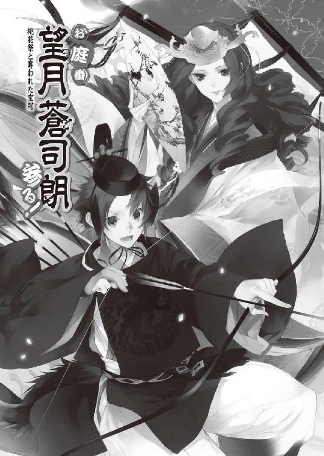
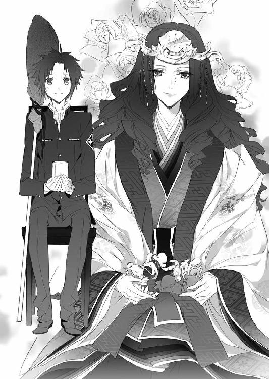

| お庭番望月蒼司朗参る!9 桃花祭と奪われた宝冠 (ビーズログ文庫アリス) | |
| 流 星香 & 榊 空也 | |
| エンターブレイン (2011) | |
お庭番望月蒼司朗参る！
桃花祭と奪われた宝冠
流星香

電子版 ビーズログ文庫
本作品の全部または一部を無断で複製、転載、配信、送信すること、あるいはウェブサイトへの転載等を禁止します。また、本作品の内容を無断で改変、改ざん等を行うことも禁止します。
本作品購入時にご承諾いただいた規約により、有償・無償にかかわらず本作品を第三者に譲渡することはできません。
本作品を示すサムネイルなどのイメージ画像は、再ダウンロード時に予告なく変更される場合があります。
本作品の内容は、底本発行時の取材・執筆内容にもとづきます。
本作品は縦書きでレイアウトされています。
また、ご覧になるリーディングシステムにより、表示の差が認められることがあります。

１
首都帝都、華やかなる中心地、帝都城下は四方を壁で囲まれた、強固な結界領域である。
教育のレベルが高く、各種設備の整った学校が数多くある帝都には、熱心に学びたい者や、格のある学歴を求める者が全国から大勢集まる。
帝都は奨学金制度や寮も充実しているので、経済的理由を持つ者も、成績優秀であれば修学を諦めなくてもいい。
帝都は治安もよく、勉強したい子供にとっては、とても望ましい場所だ。
授業が少し早く終わる水曜日の放課後、帝都学園高等部一年生の望月蒼司朗は、従兄弟の清志朗と一緒に城下へ買い物に出かけた。
「あー、楽になった！」
古い靴を店で交換し、買ったばかりの新しい靴に早速履き替えてご機嫌な蒼司朗に、清志朗は微笑む。
「成長期だもんね、蒼くん」
「そうそう！」
学年一小柄な蒼司朗は、まだまだこれからが成長期だ。靴のサイズが変わったり、スラックスの丈が足りなくなるのが、嬉しくて仕方ない。
「前の靴、底がけっこう減ってて、石とか踏んだらよくわかってさー。今にも穴が開きそうな感じで、気になって仕方なかったんだよなー」
「蒼くんの靴って、十月に帝都に来たときに、新しくした靴じゃなかったっけ？」
「うん」
平然と蒼司朗が頷いたので、清志朗は驚いたが何も言わないでおく。
「これでまた、悪い奴ら追っかけてガンガン走れるぞ！」
蒼司朗の場合、ちっともおとなしく歩いていないので、プロの運動選手並に、靴の底は毎日磨り減っていくようだ。
ちなみに、神官装束のときに履いている草履は、社務所で支度してもらっているものなので、脱ぎ置いた神官装束が毎回綺麗に洗濯したものに置き換わっているように、常にきちんとしたものに交換されている。
「ミギャ」
どこに行くときにも持っている愛用の枝打ち斧を握って歩きながら、気合いを入れる蒼司朗の学生服の胸元から、ちびっちゃい赤ちゃんサイズの白虎が、ひょっこり顔と前肢を出す。
円らな瞳で丸顔のチビ白虎は、ぽきゅる～とした赤ん坊動物特有の愛らしさに満ちているが、残念なことに、神聖な結界領域以外では霊力のない者には見えない聖獣である。
「ミギャギャギャギャ！」
「え？」
突然大きな声で鳴いたチビ白虎に、蒼司朗は何ごとかと身構える。
（何だ!?）
「キュイキュイ！」
「ピチュチュ！」
「「（しゅー！）」」
賑やかな鳴き声に促されて、そちらに注目した蒼司朗は、大きく息を吐いて脱力した。
「おい......」
「蒼くん？」
隣を歩いていた清志朗は、急に緊張したかと思うとすぐにがっくりした蒼司朗に、何かあったのだろうかと首を傾げる。
「いや、こいつらが......」
こんなふうにと言いかけて、蒼司朗は言葉を変える。霊力のない清志朗にピヨ四神の姿は見えない。
「帝都って、どこに行っても若い女の子多いよね」
蒼司朗たちと同じように、放課後を利用して城下に買い物に出ている中高生の姿は多い。
気のせいではなく、帝都は地方都市より若い女性の割合がかなり高いように見える。
言い換えた蒼司朗に、清志朗は穏やかに微笑む。
「帝都には、いい学校がたくさんあるからね」
行儀見習いや稽古ごと、社会勉強も兼ねて、地方都市から帝都の学校に進学する少女は多い。帝都で学んできたという経歴は、釣書に記しても見栄えがよく、見合いのときにも格上に思われるからだ。
学校の休暇期間に利用できる、短期集中の講座や教室、短期国内留学の制度もあるので、裕福な家の少女は、学生時代に少なくとも一度は帝都に来て何かを学んでいく。
親元を離れても辛い思いをせず、できるだけ楽しく帝都生活を送れるように、経済的な余裕を持たされた少女たちは、皆いいものをいろいろ持っている。
綺麗なものや美味しいものが大好きなピヨ四神は、可愛い女の子を見つけては、チェックに余念がない。
緊急事態かと身構えて、いつも持ち歩いている愛用の枝打ち斧を握る手に力を入れて注目した蒼司朗が、可愛い女の子しか見えなくて、がっくりするのも当然だ。
「ミギュン」
チビ白虎が甘えた声で鳴き、小さな頭ですりすりと蒼司朗に懐く。
「キュイィ」
「ピピ」
「「（しゅー）」」
首の後ろにしがみついているチビ青龍や、頭の上に乗っているチビ朱雀、肩に乗っているチビ玄武にも一斉にぺろぺろすりすりと甘えられ、蒼司朗はくすぐったい。
「あー、もうわかったわかった......！ 清ちゃん、あの子たちの食べてるあれ、アイスかな？」
蒼司朗の視線を追った清志朗は、中学生ぐらいの三人の女の子たちがベンチで食べている、カップ入りのものを見る。
「あぁ、ジェラートだね。アイスクリームとシャーベットを合わせたような感じのものかな。果物の入っているものもあって、ソフトクリームよりも少し固めで、甘さ控えめだよ」
ジェラートも牛乳と卵で作られる氷菓子だが、ソフトクリームと違って果物が果肉の状態で入っている。
「今日はお天気もいいし、食べていくかい？」
「ミギャ！」
にこっと微笑んだ清志朗に、蒼司朗にくっついているピヨ四神が大はしゃぎする。
確かに日差しはポカポカと暖かいけれど、三月の帝都の屋外は、蒼司朗としてはまだ氷菓子の季節には早いと思う。
「ちょびっとだけだよ。冷えてお腹壊すといけないから。いいね？」
言った蒼司朗に、ピヨ四神はお利口さんの返事をするように機嫌よく鳴いた。
ジェラートは、ピヨ四神が注目した女の子たちが座っているベンチの向こうにある、いかにも女の子が好みそうな感じの、キャンディカラーのお洒落な移動式ワゴンで販売されていた。
その少し向こうには、クレープやアクセサリーの販売ワゴンも何台かある。
女性ものの洋服や靴を売っている店の近くの広場に置かれたワゴンは、女性客目当てで出店しているのだとひと目でわかる。そこだけ色彩が華やかでキラキラチャラチャラしていて、渋い親父や男連中にはとても近寄れないような、ファンシーな区画が形成されている。
蒼司朗がジェラートのことを訊ねて、清志朗と一緒に食べることになったのだけれど。
（うわー、女の子ばっかり☆）
大勢の女の子たちが屯していると、恥ずかしい盛りの高校生思春期男子も、ちょっと近寄りがたい。
気後れして腰が引ける蒼司朗とは対照的に、清志朗は躊躇なくジェラートの販売ワゴンに近づいた。
「僕はブルーベリーマーブルにするけど、蒼くんは？」
ワゴンの横にあるメニューボードを見た清志朗は、すぐに注文するものを決めて列に並ぶ。
「え、えーっと......」
周りの女の子たちに見られているような気がして、もたもたしたくはないのだが、蒼司朗は初めて見るメニューを前に戸惑う。
「じゃ、じゃあオレは、ストロベリーにする」
イチゴはアイスの定番だし、ピヨ四神もイチゴが大好きだ。
「カップのＳサイズで、ブルーベリーマーブルとストロベリーをひとつずつください」
慣れた様子の女の子たちと同じように、さくさく注文する清志朗に、蒼司朗は尊敬の眼差しを送った。
「ここでいいよね、蒼くん」
横に植え込みがあって、肩から下が周りから見えにくくなるベンチに、清志朗は蒼司朗を連れていく。ここなら、蒼司朗がこっそりとピヨ四神にジェラートを食べさせても、妙な動作をしているようには見えない。
「やっぱりまだちょっと寒いね」
ジェラートは美味しいけれどと、蒼司朗と並んでベンチに座った清志朗は苦笑する。
賑やかに会話しながら女の子たちがジェラートを食べているので、油断した。日差しは暖かいが、冷たいものを口にすると身体が冷えて、さっきよりも風が冷たく感じる。
「女の子は強いなぁ」
「......強いのは、清ちゃんだよ」
しみじみと蒼司朗に言われて、清志朗は首を傾げる。
「僕？」
「清ちゃん、すっごい平然としてたけどさ、オレ、あんなふうに女の子ばっかの中に入ってく度胸ないよ」
ちょっと居心地悪そうに小さくなって、膝に乗せたピヨ四神とジェラートを分け合っている蒼司朗に、清志朗は視線を泳がせる。
「平然と、ってわけじゃないけど......。蒼くんが食べたいって言ったから......。たぶん僕一人だったら無理だよ」
自分のためではなく、蒼司朗のためだと思ったから。
清志朗は幼い頃からずっと、蒼司朗のいいお手本になりたいとがんばっていた。
それは大きくなった今も、変わらない。
ちょっと赤くなった清志朗に恥ずかしそうに言われ、きょとんと目を丸くしてから、蒼司朗は笑う。
「清ちゃんったら、変なのー！」
蒼司朗に快活に笑われて、清志朗はびっくりする。小さくなったりせず、顔を上げた蒼司朗は、清志朗を真っ直ぐ見つめる。
「でも、清ちゃんが食べたいって言ったら、オレもたぶんガンガン行ってた！」
同じような状況になったなら、蒼司朗は躊躇いなく列に並んで買い物をする自信がある。
笑顔で断言する蒼司朗に、清志朗も笑う。
「何だよ、それ」
「ホントのこと！」
「ミギャギャ」
「キュウ」
「ピピチュ」
「「（しゅー）」」
清志朗とばかり仲よくしていないで、こっちにもかまって、ジェラートをちょうだいと、蒼司朗の膝の上に乗っているピヨ四神が賑やかに鳴いて催促した。
「あぁ、はいはい、わかったから」
あーんと口を開けるピヨ四神に、蒼司朗はちょびっとずつジェラートを食べさせる。
「すぐに飲みこんじゃ駄目だぞ。口の中でしっかり溶かしてから、ゆっくり飲みこむんだよ。でないと、お腹がびっくりするからな」
冷えたものは、赤ちゃん向きの食べ物ではない。本当の赤ん坊が冷えきったものを食べたなら、温度変化に対応できず胃痙攣を起こしてしまうだろうが、ピヨ四神は聖獣で、ちびっちゃくなっているのは、今だけの仮の姿だ。
わかりきっていて、心配しなくてもいい無駄なことなのかもしれないが、手抜きをせずに赤ちゃん返りしているピヨ四神の面倒を見ている蒼司朗は、誠実で優しい。
赤ん坊動物を世話する蒼司朗の雰囲気は、柔らかくて温かい。ピヨ四神の姿は見えないが、蒼司朗の差し出したジェラートがどんどん減っていくのは見える。
あの可愛い四神様が、美味しくジェラートを食べているのだろうなと想像して、清志朗の表情も自然と柔らかくなる。
ほわほわした温かい和み系のオーラは、周りで二人の様子をそっと窺っていた少女たちにも伝わった。
可愛い少年＆爽やかな少年の、見目のいい仲よし二人組は、少女たちも大歓迎だ。
（帝都学園のあの男の子たち、二人とも何か可愛いねー）
（癒し系だよー）
（よくここに来るのかな）
場違いな連中とは見なされなかったので、ちらちらと少女たちから送られる視線はどれも好意的だ。
（兄弟じゃないよね）
蒼司朗は帝都で暮らすようになって半年ほどだが、少女たちのなかには帝都で生まれ育った清志朗のことを知っている者も何人かいた。
気性の穏やかな優等生である清志朗は、小学生の頃からずっと何かの役員をやっていたので、同じクラスにならなくても、清志朗のことを知っている生徒は多い。清志朗に兄弟がいないことも、知られている。
すっきりと整った顔だちはお互いに母親似だし、身長や体格も違うので、蒼司朗と清志朗は一緒にいても従兄弟だと思われることはほとんどない。
蒼司朗本人は嫌がるだろうが、小柄で元気のいい愛玩系少年と、賢くて優しそうな落ち着いた少年が朗らかに笑いあっている様子は、とても微笑ましい。
ピヨ四神にかまって、しっかりいつものペースになり、少し落ち着いてくると、蒼司朗にも周りを眺める余裕が出てきた。
男子校に通っていると、制服姿の少女たちに囲まれる機会は滅多にない。複数の学校の女生徒となると、なおさらだ。じろじろ見ると、好みの少女を物色しているようで嫌らしいので、蒼司朗はあくまで、そっとを心がける。
「────さすが帝都、やっぱりどの女の子もレベル高いよなー」
「そうかな？」
「清ちゃんは見慣れちゃって、わかんなくなってるんだよ」
「うーん、そうなのかな」
「そうだよ」
蒼司朗は大きく頷く。
帝都の女の子は皆、可愛らしくてお洒落で垢抜けている。
「ピ！」
蒼司朗の膝に乗ってジェラートを味わっていたチビ朱雀が、手羽を上げて一方向を指し示した。
「あっち？」
周りの少女たちからチラ見されているのを感じている蒼司朗は、突然態度を変えて注目されないように注意しながら、そっとチビ朱雀の教えたほうに目をやる。
樹木と植え込みに身を隠すようにして、不審者がいた。
「（清ちゃん......！）」
いつでも飛び出していける臨戦態勢で静かに声をかけた蒼司朗に、清志朗も緊張する。
（奥庭の四神様が何か見つけたんだ）
買い食いしたい食べ物発見というものではなく、穏やかではないものを。
蒼司朗は周りの女の子たちに気づかれないよう、そっと視線で清志朗に知らせる。
「（────あの人、そっちの白百合女学院の女の子たちのこと、ずっと見てる）」
距離があるので、見られている少女たちには気づかれていないようだが、ピヨ四神が蒼司朗に知らせたので、確かにそう。
建物の間の細い路地に身を隠すようにして、ロングコートに帽子にサングラス、さらにはマスクという、重装備の大柄な男性が一人いた。アクセサリーのワゴンを冷やかして回っている、白百合女学院の二人連れの少女の様子を窺っているらしい。
「（嫌な感じだよね、あれは）」
囁く蒼司朗に、清志朗は頷いた。
広場にあった大時計を見上げ、少女たちはアクセサリーのワゴンを離れ、広場を出て行く。
少女たちを物陰から見つめていた男も、動いた。
「蒼くん......！」
「うん。オレたちも行こう」
「ミギャ」
「キュイ」
「チュン」
「「（しゅー）」」
蒼司朗の膝に乗っていたピヨ四神は、颯爽と定位置に戻って蒼司朗にくっつく。
蒼司朗は枝打ち斧片手にいつでも飛び出せるよう、油断なく身構えているが、様子が変わったと周りに気づかれてはいけない。
食べ終わったカップを屑籠に捨てて、外見上穏やかに蒼司朗と清志朗はベンチから離れる。
蒼司朗たちのことをこっそりチラ見していた少女たちが、移動する二人に気づいて、ひそひそきゃっきゃとひとしきり賑わった。
早く帰れの追い出しではなく、名残惜しい引き止めと、また来てねの空気が伝わってくる。
「......清ちゃん、歓迎、されてる感じだよね？ 何か、すっごい来にくい場所だけど」
「男がワゴンでアイスやクレープを買って食べたって、悪いわけじゃないしね」
「うーん、それはそうなんだけど。ここって、見えない壁っていうか、バリアーがある感じがしてさー」
「バリアーって......！」
それはちょっと大袈裟だ。ぷっと吹き出した清志朗は、肩を震わせて笑った。
「な、何だよ、そんなに笑うこと？」
蒼司朗は赤くなって頰を膨らませる。気分を害したらしい蒼司朗に、悪いなと思うのだが、ツボに嵌まったらしく、清志朗はおかしくて仕方ない。
「入っていきにくいなぁとは思うけど、バリアーって......！」
「オレはそんなふうに感じたんだから、しょうがないじゃん」
（ちょっとわざとらしかったかなー）
少女たちのあとをつけている男に警戒されないよう、適度に賑やかに喋りながら、さりげなく広場を出る、という感じにしてみたのだが、演出過多だっただろうか。蒼司朗たちの様子をさりげなく窺っていた周りの少女たちが、何だか賑やかになった気がする。
「（蒼くん、いなくなったよ）」
清志朗に小声で教えられ、周りの少女に気を取られていた蒼司朗は、はっとする。
少女たちを追って動いたと思った男の姿が、見えなくなっていた。
「（あの人、ここで見てただけなのかな）」
ひょっとしたら、知り合いだったのかもしれない。
寮生活をして学校に通っている少女が、元気にしているのか、どんなふうに過ごしているのか、こっそり様子を見ていた、ということも考えられる。
だが、たとえ親兄弟でも、あの格好で少女の周りをうろついていれば不審者に見える。
「（だったらいいんだけど......。ごめん、清ちゃん、もうちょっと付き合って）」
「うん」
にこっと微笑んだ清志朗と、蒼司朗は不自然に見えないように喋りながら、少女たちのあとを追う。
姿が見えなくなったので、諦めたのかと思った不審者の男は、離れた場所から二人の少女の様子を窺って、やはりあとをつけていた。
白百合女学院も、蒼司朗たちの通う帝都学園と同じく全寮制の学校だ。二人の少女は白百合女学院の学生寮に向かうのかと思ったが、道が少し違った。
慣れた様子で城下をしばらく歩いた少女たちは、茶道教室の看板を掲げた屋敷に到着した。少女のうち一人が、屋敷に入っていき、二人は別れた。
茶道教室に通っている子と友だちが、稽古の始まる時間まで、ちょっと遊んで時間を過ごしていたらしい。
「今日は他にも何人か、白女の子が来てるみたいだね」
ここは有名な茶道の家元の屋敷だ。白百合女学院という、帝都でも最高レベルのお嬢様学校に通う名家の娘が、お茶を習いに来てもおかしくない。
車が入れるよう大きく開かれていた門から、通りすがりにちらっと覗いてみたところ、稽古は庭の茶室で行われるらしく、準備をしている者たちが、何人も庭を行き来していた。着物姿の女性の他に、白百合女学院の制服姿の少女たちもいた。
屋敷に入っていった少女は、茶道の稽古が終われば同じ白百合女学院の生徒と寮に帰るだろう。
まだ道は明るいが、先ほど別れた一人歩きして帰る少女が気になる。
「清ちゃん、もうちょっといいかな？」
「もちろん」
蒼司朗と清志朗が思ったとおり、男は一人歩きしている少女のあとをつけていた。
「ピ」
ちらちらと姿を見え隠れさせながら、距離をとって少女をつけている男が、蒼司朗たちに気づいたらしい。
男の出方が見たいので、チビ朱雀に教えられた蒼司朗と清志朗は、少女のあとをつけていくのをやめる。
通りがかりの郵便局に入った蒼司朗と清志朗は、警戒しながら男が少女をつけていったのを見送った。
「......僕たちを怪しんでる感じじゃないね」
「うん」
身内が少女の行動を探っているのなら、あとをついていく男子高校生は、チェック、もしくは排除すべき対象である。そうでないのだから、あの男はやはり怪しい不審者だ。
他にも仲間がいるかもしれないと、蒼司朗と清志朗は慎重に様子を見たが、どうやら男は一人らしい。
まだ日がある、明るいことに油断したのか、少女は寮へと近道しようと、寺町通りの人通りのない路地に入った。広い庭園の向こうに人のいる建物があるので、少々声を出して騒いでも、ここでは誰にも聞こえない。
ここだとばかりに、少女のすぐあとから路地に駆けこもうとした男の肩に。
トン、と硬い棒らしきものが、背後から乗せられた。
びくっと大きく身体を震わせ、弾かれるように振り返った男に、蒼司朗は引き戻した枝打ち斧をくるくるっと回して、棍のように構える。
「女の子のあとをつけている、不審者、発見」
帝都城お庭番、望月蒼司朗、参る─！
ひゅっと風の音をさせて伸ばされた枝打ち斧の柄の先が、男の被っていた帽子とサングラス、マスクを衝撃も与えずに吹っ飛ばした。
２
自分が悪いことをしていて、それを見つかって咎められたとき、抱いていた罪の意識に苛まれて動けなくなってしまったり、極度の緊張状態のバランスが崩れて力が抜けてしまう者と、見つかったという恐怖で箍を外して暴れる者、咎めた者を黙らせればいいと考える者がいる。
奥庭の四神様の加護を受けるお庭番・望月蒼司朗は、不埒な悪人を数多く発見し、成敗してきた。
ひったくりに強盗、掏摸集団、暗殺者─、自分が罪を犯すことを容認している常習犯罪者たちは、小柄な少年である蒼司朗の外見に、暴力でねじ伏せられる弱者であると見くびって対峙し、ことごとく打ち負かされた。
だから。
「ごめんなさい......！ そんなつもりじゃなかったんです......！」
実年齢より幼い子供に見られる蒼司朗が、畏怖の対象になることは、まず滅多にない。
体格のいい若い男性が目の前で腰を抜かして座りこみ、震えているのを見るのは、初めての体験だった。
これまでピヨ四神が発見し、蒼司朗に成敗させた悪者とは、今回は違ったようだ。
「ミギュ」
「あ、うん......」
前肢タッチするチビ白虎に、我に返った蒼司朗は、戦意のない少年に向けていた枝打ち斧を退く。
（何だよ、もう......）
極悪人と戦うつもりで、全力臨戦態勢だった蒼司朗はとても気まずい。
「キュ」
「ピピチュ」
「「（しゅー）」」
ピヨ四神の姿は見えても、言葉が通じないのだから、こういうことがあってもおかしくはない。
蒼司朗の後ろから、いつでも警官を呼びに行けるように状況を見守っていた清志朗は、顔を見せて座りこんだ少年に目を瞬く。
「────支倉先輩。どうしたんですか？」
「望月くん......」
「え？」
少年と顔見知りらしい清志朗に、蒼司朗は驚く。
帝都学園の生徒なら、同じ寮で生活しているから、他の学年の生徒でも顔ぐらいは見ていて何となく覚えているのだが、この上級生を蒼司朗は知らない。
前に出た清志朗は、蒼司朗に教える。
「帝都高校三年生の支倉信成先輩。帝都小学校の卒業生だよ。帝都の東地区にある『はせくら』って呉服屋さん、蒼くんも知ってるよね」
「あぁ、うん」
中に入ったことはないが、望月造園の仕事で帝都を移動しているときに、見かけたことのある店だ。
帝都の呉服屋の子供で、支倉信成は清志朗と同じ小学校の卒業生だ。
支倉信成は帝都学園ではなく帝都高校に進学したので、蒼司朗が知らなくても当然だ。
高校の三年生にもなれば、男子生徒の中には髭が生えていたり、体格が立派になって教師のように貫祿があり、とても子供には分類できない雰囲気の者もいる。
身長が高く、体格ががっしりしている支倉信成は、着物姿で店に出ていれば、立派な若旦那に見える少年だった。
清志朗は支倉信成に近づき、腰を落とす。
「驚かせてすみません。彼は僕の従兄弟の蒼司朗です。そんな格好して歩いてちゃ駄目ですよ、先輩。怪しい人に見えますから」
蒼司朗が吹っ飛ばした帽子やマスクを拾いながら穏やかに言った清志朗に、支倉信成は情けない顔で笑う。
「うん......。恥ずかしいなって思ったら、いつの間にかこんなになっちゃって、はは......」
「白女の子のあと、追いかけてましたよね」
清志朗に確認され、支倉信成は頷く。
「......もうすぐ卒業で、帝都からいなくなっちゃうから、その前に......」
サングラス・帽子・マスクの不審者三点セットを外した支倉信成を見送って、がっくりと蒼司朗は肩を落とす。
「女の子に手紙を渡したかっただけ、なんて......☆」
「支倉先輩は優しくて、ちょっと引っこみ思案な人なんだ」
身体は大きいけれどと、清志朗は苦笑する。
気弱でおとなしい少年も、不審者に見えるようでは、あまりに印象が悪い。
帽子やマスクで顔を隠したりせず、どこの者かがわかるように学校の制服姿で、あとを追いかけるのではなく、白百合女学院の校門の側で学校から出てくるのを待って、手紙を渡してはどうだろうかと清志朗は支倉信成にアドバイスした。
男子の基本は、玉砕覚悟の行動あるのみだ。臆していては、始まらない。
「卒業、かぁ......」
三月は、別れの季節でもある。
想いを伝えるには、もうあまり時間が残されていないと、焦る気持ちもよくわかる。
しみじみする蒼司朗と一緒に本屋に入った清志朗は、問題集を棚から取る。
「卒業式の前に、僕たちは学年末試験だよ」
「そうでした」
にっこり微笑んだ清志朗から、顔を引き攣らせながら蒼司朗は問題集を受け取った。
ぱらりと問題集を捲った蒼司朗に、頭の上に乗っていたチビ朱雀が、キランと目を輝かせる。
「ピッチュチュピー！」
「（こらこら、駄目！）」
問題集に向かってダイブしたチビ朱雀を、蒼司朗は慌てて受け止める。チビ朱雀には、新しい本の紙を齧るのが大好きという困った癖があるので、要注意なのだ。
「蒼くん、それでいけそう？」
「うん。いいと思うよ」
清志朗に頷いた蒼司朗は、チビ朱雀を頭の上に乗せる。
今日買い物に出た目的の品は、これでコンプリートだ。
帝都学園高等部での赤点は六十点。これより低い点数の場合、補習授業や追試を受けなくてはならない。そしてその成績がよくなければ、進級できない。
「帝都城奥庭のお庭番様が留年なんて、格好悪いですよ～？ 何をやっても常に成績上位だった先代のお庭番に負けないくらい、がんばってしっかりいい点とってくださいねー？」
登校前に行う奥庭の庭仕事を終え、社務所で朝食をとりながら参考書を広げて数学の公式を覚えていた蒼司朗は、吞気に朝刊を読んでいる小此木神官長の言葉に、ぴきっと固まる。
（何をやっても常に成績上位......☆）
三月の早生まれで、身体の発育も知育も他人より劣る、マイナスからの出発がデフォルトである蒼司朗には、厳しい注文だ。
一緒に食事をとっていた清志朗は、箸の止まった蒼司朗に、すかさずフォローを入れる。
「大丈夫だよ、蒼くん。わからないところがあったら教えるから」
「うん。ありがとう、清ちゃん」
清志朗と蒼司朗、従兄弟同士の二人には、同学年でありながら傍目にもわかる優劣がある。ひとつ間違えば、清志朗が蒼司朗を見下しているようになってしまうが、この二人においてそれはない。
蒼司朗は清志朗を兄のように慕って、全幅の信頼を寄せながら、肩を並べられるようにがんばっている。
清志朗は真面目で誠実な少年であり、誰よりも蒼司朗を守る力になろうと努めているので、思い上がった態度で接しているとは見えない。
相手を大切に思い、互いに高めあう、とてもいい関係だ。
「神官長......！」
お茶を運んだ鈴宮神官は、寸暇を惜しんで勉強している蒼司朗へ、余計なプレッシャーを与える小此木神官長に口を尖らせる。
「蒼司朗様は今も十分がんばってらっしゃいます」
がんばっている人間に対して『がんばれ』とは、酷な言い種だ。
蒼司朗は高校生でありながら、望月造園の見習い庭師であり、帝都城奥庭のお庭番で、奥庭の四神様のお世話係で、神官候補生。奥庭の四神様と四神変化して、天の戦士。
やることが山積みで、毎日目が回るほど忙しい蒼司朗は、それでも何ひとつ手を抜くことなく、皆の期待に応えている。
小此木神官長はときにまったく空気を読まない人だが、悪気は一切ない。無邪気に言い放たれる言葉が、ざくざくと突き刺さるだけだ。清志朗に助け船を出され、鈴宮神官に庇ってもらったが、蒼司朗は自分の力のなさを思い知る。
「ミギュン」
「キュイ」
「チュピ」
「「（しゅー）」」
蒼司朗の弁当箱の横で、弁当箱の蓋に取り分けて潰した柔らかいゴハンと玉子焼きを、わふわふと食べていたピヨ四神が、頰を膨らませてもぐもぐしながら円らな瞳で蒼司朗を見つめた。
ちびっちゃくなった奥庭の四神様は、学業成績や平常点がよくなければならないという理由に縛られることなく、蒼司朗をお庭番に選んだ。
きちんと修行して認められた神官でもない、ただの庭師見習いの子供を、帝都城の守護者たる大任に抜擢したのには、奥庭の四神様なりの基準があったのだ。
蒼司朗は蒼司朗のままでいい。
格好悪くても、精一杯がんばるだけだ。
「────ほら、ついてる。落ち着いて食べるんだぞ」
ついと指を差し伸べて、蒼司朗はピヨ四神の口許を汚している食べ物を、順番にそっと拭い取る。ついでに、ちょいちょいとくすぐるように触られて、可愛がってもらったピヨ四神は気持ちよさそうに目を閉じた。
ふわふわ柔らかくて温かい生き物に触れて、蒼司朗もほんわりと癒される。
「オレ、悔いのないように、やれるだけのこと、しますから」
強がりではなく、心から爽やかに微笑んだ蒼司朗に、ほっと鈴宮神官は頰を緩めた。
「蒼司朗様なら大丈夫ですよ。自信を持ってください」
「ありがとうございます」
鈴宮神官に微笑んで、蒼司朗は食事をしながらの勉強を再開する。
新聞を広げてお茶を飲み、くすっと小此木神官長は笑う。
（へこたれませんねぇ。感心感心）
「......悪趣味ですよ、神官長」
「あれ？ 口に出してましたか？」
誤魔化すような笑みを浮かべて目を瞬く小此木神官長に、はぁと鈴宮神官は息を吐く。
「そういう顔をしてました」
「だって、可愛いんですよー」
「神官長......」
可愛い子ほど苛めたくなるらしい、厄介な神官長に、どうしたものかと鈴宮神官は途方に暮れた。
蒼司朗はあれこれ手広くやっているが、最優先されるのは高校生であることだ。
試験一週間前から試験期間中にクラブ活動が休みになるのと同じように、蒼司朗の望月造園での見習い庭師としての仕事や、神官候補生の活動は、一時休みになった。
奥庭の庭仕事や、ピヨ四神の世話はあるので、試験勉強に完全に集中できるわけではないが、負担はかなり減る。
そして学年末試験は行われた。
「......全科目セーフ！ はー......！」
寮に届けられた学年末試験の成績表を受け取った蒼司朗は、ドキドキしながら採点結果を確認して、大きく安堵の息を吐き、自習室の机に懐いた。
ぎりぎりっぽい科目もいくつかあるが、とにかく赤点はない。
「ミギャギャー」
「キュイー」
「ピチュチュピ」
「「（しゅー）」」
ほーっと脱力している蒼司朗の周りを、机の上に乗ったピヨ四神が、よかったねとお祝いするように賑やかに飛び跳ねた。ピヨピヨした連中が、よちよちもちもちころころとはしゃぎまくる様子は癒し系で微笑ましいが、同時にちょっぴり鬱陶しい。
「（あー、うんうん、ありがとー）」
苦笑しながら、蒼司朗は喜んでくれるピヨ四神に礼を言う。
学生寮での結界領域は、若様の部屋だけだ。霊力のない者には聖獣の姿は見えないので、ピヨ四神は蒼司朗の邪魔をしたり迷惑にならないかぎり、好き放題に遊んでいる。
「だから、大丈夫だって言ったのに」
隣に座った清志朗に、くすくすと笑われて、蒼司朗はちょっと口を尖らせる。
「そりゃあ、清ちゃんの言うことは信じたいけどさ、やっぱり結果を見なきゃ心配だよ」
「補習授業や追試の可能性がある生徒は、学年末試験の前に生徒指導の先生に呼び出しを受けてるんだよ」
「え？ そうなんだ」
自分のことに手一杯で、周りの生徒を見る余裕がなかったからだが、そんな呼び出しがあったことを、まったく知らなかった蒼司朗は驚く。
「呼び出しなんてあるのか......」
（よく呼び出されなかったな、オレ）
リストに名前がなくてよかったというより、忘れられたのではないかという疑念が湧くのが、悲しいところだ。
成績の芳しくない生徒への指導について初耳という顔の蒼司朗に、清志朗は静かに微笑む。
「帝都学園ではそうなんだ」
今、蒼司朗たちのいる高等部だけでなく、中等部でも、そう。
「もしも呼び出しがあったら、蒼くんは呼び出されたって、話してくれたよね」
「うん」
当然と蒼司朗は頷く。
「ミギュ？」
「キュ」
「ピ」
「「（しゅー）」」
はしゃぎ回るのをやめたピヨ四神も、蒼司朗に寄り添って、円らな瞳で清志朗を見つめた。
ピヨ四神の姿は清志朗には見えないが、蒼司朗の様子を見ていれば、何となくピヨ四神の居場所がわかる。
「だから、僕は何も心配してなかったんだ」
「理屈はわかるけどさー」
そんなに気楽に考えていいものだろうかと笑う蒼司朗にわかるよう、清志朗はちらりと視線を流す。
「帝都学園には、帝都に住んでいる子供たちだけじゃなく、帝都の外からもたくさんの子供が来るからね」
視線に促されて、蒼司朗はそちらを見る。
自習室の隅で、地方都市から来た生徒が五人ほど神妙な表情で集まっていた。
（あ......）
近くに行って訊ねなくても、彼らが赤点をとり、補習授業を受けなければならないのだろうと蒼司朗にもわかった。
「（蒼くん......）」
じっと見ないであげてと、清志朗に注意され、慌てて蒼司朗は視線を戻す。
「......でも、すごい一生懸命勉強してた......！」
「うん」
蒼司朗や彼らと一緒に自習室を使っていた清志朗は、よく知っていると頷く。
「みんなが蒼くんみたいに努力して報われるってわけじゃないんだ。入学試験のときから、かなり無理して合格した人もいるからね」
学歴はステータスのひとつだ。どこの学校で何を学んで卒業したかは、経歴として一生ついて回る。
男子校の帝都学園は偏差値が最も高い、帝都一の学校だ。自分の子供に一番を求める親は、子供を帝都学園へ入学させたがる。親の期待に応えたい子供は、一生懸命勉強して帝都学園の入学試験に合格しようとする。
必死で勉強して、何とかぎりぎりで入学試験に合格した生徒は、その段階で学年順位の下位に属している。自分より頭のいい生徒ばかりの環境に身を置くことになるので、その後の学校生活も、能力的に結構厳しい。
がんばって希望校に入学しても、そこがゴールではない。
誰もが必ずしも、楽しい学校生活を送れるわけではないのだ。
無理せず楽しく学校生活を送るために、志望校のレベルをわざとひとつ下げて、受験する者もいる。
「蒼くんは二学期の途中から帝都に来たけど、気づいてるよね、いくつか出席番号が抜けてること」
それは蒼司朗の組だけでなく、他の組でも。
（あ......）
収まりが悪いと感じていたものの理由を、蒼司朗は理解する。
（転校したんだ）
その生徒個人の都合で。
「学年ごとに生徒の人数が違うのは、そういうことなんだ。組替えと同じに、寮の部屋も一年ごとに替わるよ」
学校を去る生徒は少なくないので、生徒が抜けたところを整理するために、学年が上がるたびに組替えが行われ、寮の部屋は移動になる。
入学試験の成績で、点数差の大きい者同士は同室になれない。
従兄弟であり、二学期の途中からの入学だとか、いろいろと事情があったのは確かだが、蒼司朗との同室希望が速やかに受理されたことや、蒼司朗がこれまで一度も学習指導の呼び出しを受けていないことから、清志朗は蒼司朗が帝都学園高等部を卒業できると思っていた。
学年末試験の成績発表が終われば、終業式までにあるのは、追試と強化学習、卒業式だ。
寮には、三年生が荷物を運び出すための空のダンボール箱が大量に運びこまれる。
「しんみり、というよりは、ばたばたして騒々しいなぁ」
「（ミギュ）」
何となく寮全体が埃っぽいので、蒼司朗にくっついているピヨ四神は、年末の大掃除のときにつけていたマスクを着用している。
卒業ってこんなものだったっけという様子の蒼司朗に、清志朗は笑う。
「うちの卒業生は、帝都大学に進学するからね」
お別れというより、大移動と言ったほうがいいだろう。
帝都学園に入学する者は、ほぼ全員、帝都大学に進学する。
帝都大学にも寮はあるが、全寮制ではないので、自宅通学や下宿する学生がいる。
帝都大学は帝都城公園北、帝都学園よりもう少し西にある。帝都大学生は帝都学園との間にある帝都図書館の利用も多いので、人によっては毎日のように顔を合わせることになるだろう。制服から私服に替わるくらいの印象だ。
大学生になっても帝都で生活し、帝都学園の部活動にＯＢとして顔を出したり、学園祭に遊びに来たり、教育実習に来たりするので、卒業生と在校生の距離はとても近い。
「蒼くんは、箱いらないよね」
「あぁ、うん、大丈夫」
入寮したときに清志朗に言われて、蒼司朗は寮に荷物を送ったときの箱を畳んで残している。荷物はそれほど増えていないので、箱が足りないということもないだろう。
「手の空いた二年生から順番に、卒業する先輩が空けてくれた部屋に移動していくんだ。二年生の部屋が空いたら、一年生が移動して、新入生のために部屋を空けるんだよ」
入学試験は二月の末に行われて結果が出ているので、環境にできるだけ早く慣れようと、中学校の卒業式が終わってすぐに、帝都に来て寮生活を始める新一年生もいる。
「若様は部屋替わらないよね？」
「若様の部屋は特別だから。若様と、そのお世話係の部屋だけは例外だよ」
代々の若様が使ってきた部屋は、侵入者や暴漢に対する安全も考慮した特別な部屋だ。お世話係に任じられる生徒の部屋も、一般生徒の部屋とは違う。
寮生が部屋の移動でばたばたするこの時期、のんびり過ごせるのは、若様と篠原勇輝だけだ。
自習室に入ってきた蔵田実親は、きょろきょろと自習室にいる者を見渡し、見つけた、という様子で蒼司朗に近寄った。
「（蒼司朗クン、参考書と問題集あげるよ）」
「あ、はい、ありがとうございます」
小声でこそこそっと告げられたのは、他の生徒の手前、贔屓になるからだろうか。
帝都を守る玄武の戦士である蔵田実親には、ファンも多い。
この春からは帝都大学生で自宅通学になるので、蔵田実親も部屋の荷物を整理していた。
今のうちにと蔵田実親に呼ばれ、蒼司朗は清志朗と別れて蔵田実親の部屋に向かう。
「一人で大丈夫かな？ ちょっと重いよ？」
「はい、平気です。オレ、こう見えても力ありますから」
「（ミギュギュ）」
「（キュウ）」
「（チュピピ）」
「「（しゅー）」」
マスクをしているピヨ四神も、心配いらないと蔵田実親に顔を見せる。
背が低く童顔なので弱い保護対象として見られがちだが、基本体育会系であり、庭師見習いとして働いている蒼司朗は、大きくて重たい鋏も扱うので、同じ年頃の少年と比較して、腕力はあるほうだ。
「そう？ じゃあ大丈夫だね」
蔵田実親はにこやかに、遠慮なく蒼司朗に本を渡し、ずんずんと積み上げていく。
四十センチも超える量の本を受け取った蒼司朗は、むっと眉を顰める。
重さが問題ではなく。
「......蔵田先輩、これ、ここの自習室の本ですけど」
渡されたのは、背表紙に持ち出し禁止のシールが貼られている本ばかりだ。
（使って、そのまま返さなかったんだな）
自分の教科書やノートと一緒に、気づかれないように自習室から持ち出したに違いない。
胡乱な目で蒼司朗に見られた蔵田実親は、しかし平然と微笑む。
「うん。だから、僕が持ってちゃいけないじゃないか」
「先輩......」
（何か違うよ、それ）
蒼司朗はがっくりと肩を落とす。
「あ、そうそう。ついでだから、これもあげるよ」
思い出したように蔵田実親は最後に一冊、蒼司朗が抱えた本の山に、背表紙にシールの貼っていない参考書を乗せた。
この一冊だけが、蔵田実親の本らしい。
「これからもがんばって勉強したまえ。応援してるよ」
にっこり微笑んで、蔵田実親は蒼司朗を部屋から追い出した。
寮監や他の寮生に見つからないよう、大量の本をこそこそっと部屋に持って帰った蒼司朗に、清志朗は温い笑みを浮かべる。
「────その本、お駄賃だね」
「うん、そうだと思う......」
一冊だけの蔵田実親の私物。
寮監に見つかると、たっぷり説教されそうなので、蒼司朗は大量の本をこっそり、不自然にならないように自習室に戻さなければならない。
先輩のしでかしたことの後始末は、残った後輩の仕事なのである。
可愛い後輩に何かしらの尻拭いをさせるのが、帝都学園高等部の伝統となっているらしく、清志朗は生徒会室の壊れた備品の修理を押しつけられて、悪戦苦闘した。
部屋に隠していた大量のエロ本を譲渡された者や、発生していたカビの掃除をさせられた者、がっつり溜めこんで変色した洗濯物を洗わされた者、いつから開けられていないのかわからない異臭を放つ不気味なロッカーを片づけさせられた者など、三年生の置き土産は様々である。
テメーこのヤロ、とっとと出て行け！
どこか殺伐とした不穏なものを含みつつ、帝都学園高等部の卒業式は厳かに行われた。
３
帝都学園高等部の卒業式から三日後、神官候補生としての修行を終えて寮に戻った蒼司朗は、玄関の受付カウンターのガラス窓の奥に見慣れない箱が置いてあることに気づいた。
箱には『投票時間 七時から二十時まで』と書いた紙が貼ってある。
「明後日までに桃花祭代表生徒を選んで、投票しなくちゃいけないんだ」
清志朗は蒼司朗が出かけている間に配られた投票用紙と、説明書きである投票案内を渡す。
「桃花祭？」
「白百合女学院の卒業式だよ」
「卒業式......」
帝都学園高等部の卒業式（と三年生の最後の横暴☆）を思い出し、枝打ち斧を壁に立てかけた蒼司朗は、自分のベッドの上にピヨ四神を放しながら渋い顔になる。
卒業式全般に悪印象を持ってしまったらしい蒼司朗に、清志朗は笑う。
「うちと白百合女学院は全然違うよ」
「そうかな」
年長者や先輩が理不尽なのは、どこでも同じだ。
男の子に見せる顔と、女の子同士のときの顔は違う。とくに清志朗のように優等生で、格好いい男の子の前では、気取った余所行き顔を見せているはずだ。
「地方から来てる白百合女学院の子たちは、帝都に綺麗な思い出だけ残したいんじゃないかな。女の子の時間は、早いから」
「ヘ？」
きょとんとする蒼司朗に、清志朗は言う。
「長期休暇で帰省しているとき、白百合女学院の女の子は、お見合いしてくることが多いらしいよ」
「お見合いって......」
「うん。卒業して家に帰ったら、すぐに結婚するんだ」
地方から来た少女たちにとって、帝都で女学生として過ごす期間の終わりは、少女時代の終わりでもある。
名家の娘である彼女たちは、白百合女学院を卒業する頃には、嫁ぎ先がほぼ決まっている。地方から来た白百合女学院の卒業生は、立派な大人の女性となって帝都を去る。
「桃花祭は、三年生の最後のお祭、かな。卒業展示の生け花とか書道があって、卒業生による楽と謡、舞踊が奉納される。代表生徒はその奉納のときに、頭に宝冠を頂くことができるんだ」
白百合女学院は一流の女子教育の場だ。
知識を深める勉強に加えて、行儀作法とひと通りの稽古ごとを学ぶ。奉納する舞踊は体育の授業の日舞で、楽や謡は音楽の時間に練習したものだ。
「ふーん......、そうなんだ」
蒼司朗は投票案内に目を通す。
桃花祭では卒業生から一人、白百合女学院の関係者だけでなく帝都民の一般投票によって、代表生徒が選出される。
代表生徒は、学業やクラブ活動などで優秀な成績を修めたり、最も宝冠が似合う美しい生徒だと思われたり、学外での活動で名誉ある白百合女学院の生徒として認められた者が、毎年多くの票を獲得して選ばれる。
名誉ある代表生徒に選ばれた生徒には、桃花祭で宝冠の授与が行われる。
「今年の卒業生......。代表生徒に選ばれるのは、投票なんてしなくったってさ、芙蓉先輩で決まりなんじゃないの？」
今年の白百合女学院の三年生には、芙蓉薫子という完全無欠の女王様がいる。
帝都を守る四神の戦士、朱雀の戦士である芙蓉薫子は、文武両道に秀でたスタイル抜群の大美人のミス白百合女学院であり、朱雀神社の美人巫女の一人だ。
学校の中はもちろん、帝都では老若男女問わず、絶大な人気がある。芙蓉薫子のことを知らない帝都民はいない。
帝都民なら誰でも一枚もらえる綺麗な桃色の投票用紙には、白百合女学院の校章の透かしが入っていた。
投票用紙には香料が含まれているらしく、甘いいい香りがする。
「ミギュギュ」
「キュイー」
「チュッピピピ」
「「（しゅー）」」
綺麗な紙と香りに心惹かれ、ベッドから机に飛び移ったピヨ四神が、見せて見せてと群がる。
「こらこら、駄目だから。これは、遊んでいい紙じゃないんだよ......！」
舐めたり齧られたりしてはいけないので、ピヨ四神から投票用紙を遠ざけながら言った蒼司朗に、清志朗は苦笑する。
「芙蓉先輩で決まりだろうとは、たぶん皆思ってるだろうけど、毎年の決まりごとだから」
「ふーん」
ピヨ四神は蒼司朗が遠ざけたほうに投票用紙を追って動き、顔を上げたり、前肢を上げたり、ぴょんぴょん飛び跳ねたりする。何だかちょっと面白くなって、蒼司朗は右、左と投票用紙を動かし、ピヨ四神はそれについてわいわいと動く。
「今年は票の最高獲得記録が更新されるだろうね」
「芙蓉先輩だもんな」
伸び上がりすぎて、ころりと転がったチビ白虎がチビ青龍とぶつかり、避けようとしてチビ朱雀が尻餅をつき、チビ玄武が仰向けに転がった。小さな目を瞬いて、びっくりしているピヨ四神を、蒼司朗は笑って助け起こし撫でてやる。
「一人で複数の投票をしないように、投票用紙を投票箱に入れるときには名前をチェックされるけど、参加は任意だから、蒼くんが面倒なら投票しなくてもいいよ」
白百合女学院の関係者以外、投票は任意だ。投票しなくてもペナルティは何もない。
投票しなくても、今年の結果はわかっている。
甘えて飛びついてきたピヨ四神を抱っこした蒼司朗は、清志朗に微笑む。
「結果はわかってても、オレも参加する。せっかくだもんな」
芙蓉薫子の卒業年度に立ち会えたのだから、投票しないのはもったいない。
「明日の朝、出かけるときに投票箱に入れるよ」
ピヨ四神をそれぞれのお気に入りの位置にくっつけた蒼司朗は、勉強机で投票用紙に芙蓉薫子の名前を書きこむ。
「でも、残念だなぁ。宝冠を被った芙蓉先輩、オレもこの目で見たかったよ」
ゴージャスなものは絶対に芙蓉薫子に似合うに違いないと蒼司朗は思う。頼めば写真を見せてもらえるだろうが、できればリアルタイムで見たいものだ。
残念がる蒼司朗に、清志朗は事もなげに言う。
「見られるよ？」
「え？ 宝冠って、お持ち帰りできるもんなの？」
美人コンテストのローブや王冠のように、会場でだけ身につけるものかと思っていた蒼司朗は、意外な言葉に目を瞬く。
「記念品とか？」
代表生徒に選ばれた記念に、もらえるものなのだろうか。
「ミギャギャ」
「キュウ」
「チュピチュピ」
「「（しゅー）」」
「いや、食べものじゃないから」
記念品と聞いて、目を輝かせたピヨ四神に、蒼司朗は苦笑する。
「ミゴ？」
え？ 違うの？ と見上げるピヨ四神を撫でて、蒼司朗はベッドの上に放す。
蒼司朗が落ち着くのを待って、清志朗は言う。
「宝冠は白百合女学院創立時に帝から贈られた大切なものだから、年に一回、桃花祭のときに出されるだけだよ。白百合女学院の門外不出の宝物だね」
「じゃあ......」
「桃花祭のときには関係者でなくても、白百合女学院に入れるんだよ。招待状は必要だけどね」
年に二回、文化祭の桔梗祭と卒業式の桃花祭のときには、白百合女学院は一般に校門を開放する。
普段は男子禁制の乙女の園だが、この日だけは男性も白百合女学院の構内に足を踏み入れ、美しく着飾った卒業生たちや在校生の姿を見ることができるのだ。
「不審者が入りこんだり、校舎や物に変な真似をされないように、桃花祭の日にはいつもよりも警備員の数が増やされるんだ。公儀隠密や公儀隠密候補生の人たちも警備に加わるから、これまでも、そしてこれからも問題は起こらないよ」
「ふーん」
帝都の女学校に預けた大事な娘に何かあったなら、それは帝都の不始末として認識される。白百合女学院の乙女たちの玉の肌には、小さな引っ搔き傷のひとつさえ、つけてはならない。
帝都の皆で白百合女学院の乙女たちの卒業を祝うのだとしても、公儀隠密とその候補生たちが警備に参加するのなら、滅多なことにはならないだろう。
「蒼くんも桃花祭に行くよね」
当然のように言われて、蒼司朗は目を丸くする。
「オレも行けるの？」
「もちろん、っていうか、僕たちは行かなくちゃいけない。白女には、うちのお得意様のお嬢さんが通ってらっしゃるから、毎年誰かが卒業されるんだよ。望月造園の者として、花と贈り物を持って卒業のお祝いに行かないと。それに、蒼くんは芙蓉先輩にお世話になってるしね」
清志朗の言葉は、望月造園の跡継ぎとして当然だ。そして蒼司朗は帝都城のお庭番として、朱雀の戦士である芙蓉薫子にいろいろと面倒をかけている。
桃花祭には行かねばならないだろう。
「でも、オレ、招待状......」
招待状がなくては、桃花祭に行けない。蒼司朗は帝都に同年代の少女の友人がいない。
「大丈夫。何とかしてあげるよ」
にこっと清志朗は微笑む。
桃花祭の招待状は白百合女学院の生徒や教師、学院関係者によって配布される。家族や親戚、友人知人から招待状をもらうのが一般的だが、そういう伝のない者も、桃花祭のため白百合女学院に来校する。
桃花祭の招待状は、複数枚もらった者が金券ショップに売ったりするので、枚数制限はあるものの、入手困難というわけではないのだ。
「でも、何かばたばたするんだな。明後日までに投票なんて。もっと早くから告知すればいいのに。卒業したうちの先輩、卒業式が終わって、いったん実家に戻った人とかいるじゃん」
選挙と違って、桃花祭の代表生徒選出には、不在者投票のシステムはない。
忙しないなという蒼司朗に、清志朗は笑う。
「これまでにいろいろあって、今の日程になったらしいよ」
桃花祭の代表生徒の投票が帝都学園高等部の卒業式よりもあとにあるのは、帝都学園高等部の卒業式を邪魔しないように配慮したためである。
代表生徒選出が、白百合女学院三年生の人気投票となるので、噂になっている少女がどんな子なのか、気になる。登下校の途中で顔を見ようとか、誰がどの子を気にしているとか、気持ちが浮かれてしまっては、卒業式にならない。
投票期間が短いのは、女の子の観察時間を与えないようにだ。
必ず投票しなければならないわけではないので、知っている白百合女学院の三年生が、代表生徒に相応しいと思えば、その名前を書いて投票する。それだけでいい。
「望月造園のお客様のお嬢さんへの贈り物とお花は、顧客リストで調べて、毎年同じものをまとめて発注してるんだ」
年度替わりの手拭いと同じく、望月造園にはまだまだ蒼司朗の知らないことが多くある。
「......芙蓉先輩もそれと同じ、ってわけにはいかないよね、やっぱり」
「うん」
申し訳なさそうに清志朗は頷く。
「朱雀神社は、うちのお得意様じゃないしね」
望月造園から贈る、卒業祝いの発注数に入れるわけにはいかないだろう。
受け取る芙蓉薫子のほうでも、蒼司朗個人から贈られたはずのものに望月造園の名前が入っていては、ちょっと具合がよくない。
「芙蓉先輩へのお祝い、明日一緒に探しに行こう」
誘いかけた清志朗に頷きそうになって、蒼司朗は思い止まる。
「ありがとう、清ちゃん。でも、オレ、一人で何か決めてくるよ」
「そう？」
断られると思っていなかった清志朗は、目を瞬く。
「うん。お小遣いもたっぷりあるし、大丈夫だよ」
（清ちゃんにも仕事があるんだ。オレに付き合わせて、邪魔しちゃいけない）
「オレには、奥庭の四神様もついてるから！」
「ミギュ」
「キュオ？」
「ピチュン」
「「（しゅー）」」
呼ばれたらしいと、蒼司朗のベッドで走り回っていたピヨ四神が、縁からひょっこり顔を出す。鳴き声で振り向いた蒼司朗は、ベッドの上のピヨ四神に微笑む。
ピヨ四神を見上げる蒼司朗の横顔を、清志朗は優しい目で見つめる。
「困ったことがあったら、何でも相談してね。僕はいつでも蒼くんの味方だから」
「うん、ありがとう、清ちゃん」
迷惑をかけてはいけないと、強がってみた蒼司朗だが。
「────卒業祝いの贈り物って、何にすればいいんだ？」
作業の空き時間を狙って買い物に出かけたものの、蒼司朗は考えがあって城下に出たわけではなかった。
百貨店に入れば何か適当なものがあるかと思ったが、『卒業祝いに最適』と書いたポップのある商品が山ほどあって、目移りして、とてもひとつに決められなかった。
最上階から一階層ずつ下りてきたものの、どれも選べない蒼司朗とは反対に、ピヨ四神は欲しいものがあれこれとあったようで、各階に移動するたびに賑やかに騒ぐ。探して捕まえるのはひと苦労なので、脱走しないよう見張っているだけでも大変だ。
「ミギャギャギャ」
「キュイッキュイッ」
「チュチュチュピピピ」
「「（しゅーしゅーしゅー）」」
「今日は芙蓉先輩の卒業祝いを買いに来たんだよ。お前たちのものを買いに来たんじゃないの」
「「「「「ぶー！」」」」」
叱られて、拗ねたピヨ四神は鼻を鳴らす。
（もう......）
蒼司朗は溜め息を吐くが、いいものがたくさんある場所に連れてきてしまったのだ。いいものを見れば、はしゃいで当たり前。蒼司朗がよくない。
「......あとで地下の食料品売り場でお菓子買ってやるから。おとなしくしてて」
蒼司朗の言葉を聞いたピヨ四神は、キラキラと目を輝かせ、ぴたっとおとなしくなった。
『卒業祝いに最適』とお勧めの品は、あまりよくわからない蒼司朗が見ても、いいものらしいとわかるのだが。
「......芙蓉先輩の好みとか、知らないしなぁ」
好みでないものだとか、すでに持っているものをもらってしまっても、きっと芙蓉薫子は持て余すに違いない。贈り物をして喜んでもらいたいのに、持て余してしまうようなものでは駄目だ。
「芙蓉先輩なら、色んな人からたくさんもらうだろうし」
芙蓉薫子の場合、顔を合わせれば会話するような知り合いだけでなく、名前も知らないファンからの贈り物もきっと多いはずだ。
（何が欲しいのか、調べたほうがいいのかな。それとも、直接訊ねるとか......）
自分が芙蓉薫子のストーカー紛いの怪しい人になるのも困るが、かといって面と向かって訊ねるのには、かなりの勇気がいる。
白百合女学院の近くで芙蓉薫子が出てくるのを待っていたなら、蒼司朗はミス白百合に告白しに来た、帝都学園高等部に通う下級生男子のように見えるだろう。
きっと瞬く間に噂になる。
ファンとして慕うのなら当然でも、大美人で朱雀の戦士の芙蓉薫子に恋愛感情を抱くなんて恐れ多いので、告白したと勘違いされただけでも、あちこちからすごい目に遭わされそうだ。
（......オレ、チビだし☆）
身の程知らずと嘲られる心当たりは、蒼司朗の場合、悲しいことに山のようにある。
とりあえず、今日のところは下見ということにしようと、贈り物を買うのを諦めた蒼司朗は、ピヨ四神のお菓子を買いに地下食料品売り場に向かう。
チョコレート売り場で、知っている人を見つけた。
「────篠原」
「おう」
呼びかけられて振り向いた篠原勇輝は、ちょうど会計をすませたところだったらしく、レシートを受け取る。
「言っとくが、俺が食うとかじゃねぇぞ？ ル子先輩に卒業祝いに贈るんだからな！」
「あ、あぁ、そうなんだ」
専門店で買い物なんて、相当のチョコレート好きだ。篠原勇輝は甘いモノはあまり得意ではない。
（芙蓉先輩に贈るのかぁ。似合うよな、芙蓉先輩なら、こういうの）
ショーケースに並んでいる綺麗なチョコレートボンボンに蒼司朗は目をやり、値段を見て固まった。
（こんなちっちゃいの、ひと粒で三百五十円!?）
指で摘んで、ポイっとひと口で終わりのチョコレートに、信じられない値段がついている。
はっきり言って、馬鹿高い☆
（チョコって、こんな値段するもんだったっけ!?）
蒼司朗が知っているものとは、世界が違うようだ。
「......芙蓉先輩って、こういうの好きなんだ？」
「チョコはこの店だな。ったく、高くつくぜ......！」
「直接渡さないのか？」
「卒業祝いだからな。ル子先輩に何か贈る他の連中と同じに、配送でいいんじゃね？ べつに目立つ必要ねーし」
恋人とかなら、直接会って手渡しというのが普通だろうが、芙蓉薫子と篠原勇輝は、朱雀神社と白虎神社、同業の帝都の四神神社の関係者という間柄だ。卒業祝いの受け取りに、わざわざ時間を割いてもらうほどでもない。
人気があり、何かと贈り物をもらう機会の多い芙蓉薫子は、基本、店から直接配送されたものしか受け取らない。
「よかったな。チビのオメーでも、配送なら見落とされねー」
「うるせーよ」
憎まれ口を叩いて舌を出す篠原勇輝に、遠慮なく蒼司朗が繰り出したパンチは、ぱしっと小気味いい音をさせて受け止められた。
「ミギャ」
引き戻された蒼司朗の拳に、次にパンチするときは上に乗っかって飛ぼうと考えたチビ白虎が、目をキラキラさせる。
「キュアキュア」
「チュピー」
「「（しゅー）」」
計画を知った他のピヨ四神が、期待の眼差しで見守る。
いいところで、情報収集できそうな者に会えたと、蒼司朗は胸の中で安堵する。芙蓉薫子と付き合いの長い篠原勇輝なら、いろいろと知っていそうだ。
「え、っと、あのさ、芙蓉先輩は、そのチョコの他にはどんなものが好きなのかな？」
「あぁん!?」
鼻に皺を寄せ、物騒な目つきになって、何だそれはと短い言葉で問い返した篠原勇輝に、蒼司朗は愛想笑いする。
「い、いや、オレも、芙蓉先輩に卒業祝いを贈ろうかなって、思って......」
赤くなって、しどろもどろに言った蒼司朗に、篠原勇輝は呆れ果てたように息を吐き捨てる。
「馬っっっ鹿じゃねーの!?」
「なっ......！」
思いっきり溜めて腹の底から言い放たれて、蒼司朗はカチンとくる。
「いいだろ！ オレが先輩に卒業祝い贈ったって！」
「だったらズボラかましてねーで、テメーの頭で考えろよ、ボケが！」
言い捨てて、篠原勇輝は蒼司朗に背を向けた。
スラックスのポケットに手を入れた篠原勇輝は、肩で風を切る怖いお兄さんそのものの格好で、帝都百貨店から出て行った。
態度は毎回ムカつくが、篠原勇輝はいつもけっこう正しいことを言っている。
「......自分の頭で考えろ、か......」
まったく考えナシの、行き当たりばったりだったことに、敗因があるらしい。
帝都百貨店には何でもあるのに、蒼司朗は芙蓉薫子のために何も買えない。
ピヨ四神のおやつの乳ボーロだけを買って、蒼司朗は帝都百貨店を出た。
４
贈り物をするにも、分相応、適当というものがある。
贈り手の意向にかかわらず、ある金額以上になると、受け取ったほうはお返しをしなければならないと考えるので、受け取るだけでいい、お返しを必要としないものは、金額が小さいのが一般的だ。
卒業式には、卒業生に花を贈る者が多い。
花屋では、贈り手と受け取り手の関係をもとにして、どの金額の花を贈るのが適当かという参考を提示している。初めて花を贈る者でも、迷うことなく決められる。
帝都の花屋は、花を包んで支度し、店の前に特設の販売台を出して、大勢の客に対応できるようにしていた。花屋に立ち寄った者は、並んでも待たされることなく、速やかに花を買って白百合女学院に向かっている。
「で、何を贈ったんだい？」
桃花祭当日、一緒に寮を出る清志朗に尋ねられ、いつものように枝打ち斧を持ち、ピヨ四神を連れた蒼司朗は、バツが悪そうな顔で首を竦める。
「いや、その、結局、何も買えなくてさ......。でも、とりあえず『オレらしいもの』を用意してみたよ。芙蓉先輩が喜んでくれるかは、わからないけど」
「まぁ、気持ちだからね」
それでいいのだと、清志朗は微笑む。
これが欲しいとねだられたものでもなければ、いくら一生懸命考えて贈り物をしても、それは必ずしも心から気に入られたり喜ばれたりはしない。高価だからいいというものでもない。
人の好みや求めているものは様々なので、こればかりは仕方ない。
蒼司朗にしか贈れないもの。
蒼司朗は制服の胸ポケットに入れた赤のタータンチェックで縁取りされた洋封筒を、半分ほど引き出して清志朗に見せる。封筒には、ほとんど厚みがないようだ。
「......チケット？」
その封筒にその厚みで入れられそうなものは。
推測した清志朗に、蒼司朗は笑う。
「うーん、まぁ、そんなものかな！」
封筒だけで渡すと恋文のようなので、蒼司朗は花屋に寄って、一番一般的な一輪包みの花を買った。
清志朗は蒼司朗と同じ花の包みを四つ買って、花屋の前の長机でサービス品のカードに相手と自分の名前を書きこみ、落ちないようにシールで貼っていく。
「ミギャギャ」
「キュイ」
「チュピッ」
「「（しゅー）」」
よじよじ動いて、あれがいいと鳴いて注意を促し、花屋のちっちゃい花を一輪ずつ欲しがるピヨ四神に、蒼司朗は苦笑する。
「いや、お前たちは贈らなくていいから。芙蓉先輩、きっと大荷物だからさ。お前たちの花が潰れちゃうしさ」
しかし、この記念のときに渡すから、一人一輪の花の意味があるわけで。
「......ひとまずオレのに便乗しとくか」
蒼司朗は、用意した封筒をポケットから取り出し、清志朗がカードに名前を書きこんでいる長机に置いた。ピヨ四神を長机に下ろす。
「名前の代わりに足形つけとけ」
霊力のない人の目には、ピヨ四神の姿も足形も見えないが、芙蓉薫子にははっきり見える。ピヨ四神の足形は、サイン代わりにちょうどいい。
「ミーギャッ」
「キュイー」
「チュッピピッ」
「「（しゅー）」」
ピヨ四神は、ここと狙いを定めて、蒼司朗が名前を書いた封筒に、自分の足形をつけた。
見直して、満足そうに、ふんふんする。
「よし」
蒼司朗はピヨ四神の足形付き封筒を、贈り主を示すカードのように一輪包みの花にシールで貼っておく。
慌ただしく大勢と挨拶しても、花にカードがついていれば、誰からもらったのかわかる。
ピヨ四神は足形付きの封筒が一輪包みのセロハンに貼られたのを見て、定位置に戻るように蒼司朗にくっついた。
清志朗はカードをつけ終わった一輪包みの花を、紙袋に入れて見えないようにして持って、一輪包みを手で持つ蒼司朗と白百合女学院に向かう。
「清ちゃん、それが望月造園から贈る花？」
「ううん、そっちの花は、手配して花屋から送ってもらった。これは、僕の個人的なものだよ。児童会でお世話になった先輩や、いつも蒼くんがお世話になっている芙蓉先輩にお祝いを言わないとね」
大仰にならないよう、知り合いには一輪包みの花を贈る。一輪包みの花はお返しの必要のないものなので、気兼ねなく受け渡しができる。
「父さんも行ってるけど、僕たちもお得意様に挨拶回りをするよ」
望月造園の熨斗のついたお菓子と花束は店から配送されている。望月造園の親方である、清志朗の父で蒼司朗の伯父・望月左近も、お祝いを言うために白百合女学院の桃花祭に行く。
桃花祭にいて知らんぷりできないので、蒼司朗と清志朗も、お得意様のお嬢さんを見つけて挨拶をしに行かなくてはならない。花はもう贈ってあるので、渡す必要はない。持っているのに渡さないと見えると妙なので、清志朗は紙袋を使ったのだ。
桃花祭当日の白百合女学院は、いつもより厳重に警備され、校門が大きく開放されていた。校門のところには長机が出され、招待状を持つ来校者の受付を行っている。
「けっこう皆、来てるんだなぁ」
蒼司朗は帝都の学校の制服姿の男子生徒がちらほら見えることに驚く。
卒業式なんて、その学校の生徒以外に出席するのは、普通は家族ぐらいなのだが、友達と誘い合わせてきたらしい、蒼司朗たちと同年代の少年たちの姿も多く見かける。地方から姉妹の卒業を見守りに来た少年たちは、服装が違うし家族と一緒だから、すぐにわかる。
驚いている蒼司朗に、清志朗は教える。
「桃花祭は、帝都の準イベントなんだよ」
白百合女学院に通っているのは、名家の令嬢ばかりだ。女医になるとか、知識や資格を得なければならない理由がなければ、大学に進学する令嬢はほとんどいない。
修学期間終了となるので、白百合女学院を卒業する令嬢の家と付き合いのある者や業者は、挨拶に行くのが慣習となっている。家業を継ぐ子供も、お祝いを言うために桃花祭に行く。
帝都の学校で、もっとも大勢の人間が参加する卒業式だ。準イベントとして認識されるだけの経済効果もある。
受付した招待状には割印が捺され、来校者は偽名を使ったりしないように身分証明を提示し、ノートに名前を記して、中に入る。
悪いことをしようと計画しているわけではないが、どこに行くにもいつも蒼司朗が持っている愛用の枝打ち斧は、丈の長い棒でとても目立つ。
一見してわかる『普通ではないもの』なので、危険物を構内に持ちこまれないための所持品検査に引っかかるのだが、校門で警備に当たっていた公儀隠密が口添えしてくれて、すんなりと持ちこみを許可された。
受付の横には式次第を記した案内板がある。
卒業証書授与式は、十一時から大講堂で。祝膳のふるまわれる昼食は、食堂で十二時から。
卒業生奉納の舞踊は、十三時から野外ホールで行われる。
卒業生見送りは、十四時。
注記として『例年どおり』と記してあった。
「白百合女学院の学生寮は、桃花祭が始まる前に、荷物を全部片づける決まりになってる。桃花祭を終えて学校を出ると、そのまま家に戻るんだ。帝都の人も、地方の人もね」
三年生はそれぞれの迎えの車に乗って、この白百合女学院を去ってゆく。
地方の生徒は、学校を出た車で駅に向かい、列車に乗り換えて郷里に戻る。
一切の寄り道はない。
「そうなんだ......」
白百合女学院の三年生とは本当に、これでお別れだ。
三年生がいるのはあと数時間だけだとわかって、何となく蒼司朗も切ない気分になる。
式次第を記した案内板には、今年の代表生徒に選ばれた三年生の名前が書いてあった。
『本年度代表生徒 芙蓉薫子』
予想どおりだ。
投票の二位三位が誰なのかは集計でわかっているが、ここでは意味がないので公表されない。
「うん。やっぱりね」
「違うと逆にびっくりだよな」
清志朗と蒼司朗は、当然の結果だと頷き合う。
大講堂で式が始まるまで、まだたっぷり一時間はあるが、その前から来校している人たちで、白百合女学院は賑わっている。
白百合女学院の制服を着た女生徒で、胸に赤い花をつけているのが三年生だ。三年生には桃色のラインの入った腕章をつけた在校生が付き添って、卒業祝いの挨拶の邪魔にならないよう、紙袋などを持って贈られた花やプレゼントを纏めて整理している。
構内の具合のいい場所にいくつも緋毛氈が敷かれ、茶席が設けられていた。茶を点てているのは、胸に赤い花をつけた三年生だ。
卒業祝いに訪れた知り合いに、学生時代最後の茶をふるまっている。
誰でも自由に出入りできるように開放されている一部の校舎では、卒業生の作品である書道や絵画、被服の展示が行われていた。
女子高に初めて入った蒼司朗は、ちょっとドキドキしながら構内を見回す。
足元は石畳で舗装され、真っ白な玉砂利が敷かれ、男子校では見られなかった可愛い花の咲いている花壇やアーチ、噴水やベンチ、蔦の絡まる東屋がある。
「やっぱり女の子の学校って、綺麗だね」
「うん」
それに何だか、いい匂いがする。
校庭の一ヵ所にだけ、大きな人だかりができていた。
「......芙蓉先輩は、たぶんあそこだよね、清ちゃん」
「うん。きっとあそこだね」
近づこうかどうしようか、蒼司朗と清志朗は思わず顔を見合わせる。
挨拶して花を渡すなら、一年生の生徒が『芙蓉薫子嬢 御挨拶 最後尾』のプラカードを持っている列に並ばなくてはならない。
「時間かかりそうだよな......」
蒼司朗たちには、他にも挨拶しなければならない人がいる。時間のかかりそうな芙蓉薫子に先に挨拶するべきか、芙蓉薫子をあとに回すべきか。
「ミギュギュ」
「キュウ」
「ピピチュン」
「「（しゅー）」」
考える蒼司朗と同じように、くっついているピヨ四神も難しい顔をする。
ぴくっと耳を動かしたピヨ四神が、くりっと振り向くように首を動かす。
「ミギャ！」
「キュイ！」
「チュン！」
「「（しゅー！）」」
（え？）
何ごとかとピヨ四神が顔を向けたほうに蒼司朗が振り向き、その動きにつられて清志朗も振り向く。
「────蒼司朗様、清志朗さん」
「柳生さん」
桃色のラインの入った腕章をつけた柳生真純が、贈り物の包みを満載した台車を校舎に運び、空にして戻ってきたところだった。
公儀隠密・柳生家の娘であり、四神の戦士と奥庭のお庭番の連絡係をしている女忍者、柳生真純は、蒼司朗が何かとフォローしてもらっている少女であり、清志朗とは帝都小学校のときの同級生だ。
帝都学園で篠原勇輝が若様のお世話係をしているように、柳生真純は白百合女学院では芙蓉薫子について活動している。
他の生徒と一緒に、今日も芙蓉薫子のサポートをしていたようだ。
「ミギャギャギャギャ」
「キュイキュオ」
「ピチュチュチュピチュピ」
「「（しゅーしゅー）」」
愛想を振りまくピヨ四神に、にこりと柳生真純は微笑む。
「おはようございます、四神様。お二人も薫子様にお祝いですか？」
「う、ん、そのつもりだったんだけど......。あんまりすごいんで、どうしようかって思ってたんだ」
「時間かかりそうだよね？」
ちらりと列に視線を流した清志朗に尋ねられ、柳生真純は苦笑する。
「そうですね。制服姿の薫子様を拝見できるのは、この場が最後ですから。間近で卒業と代表生徒選出のお祝いを、と考えられる方がたくさんいらっしゃいますね。今でしたら......三十分待ちぐらいだと思いますけれど」
（三十分......）
蒼司朗と清志朗は顔を見合わせる。
見ている間にも、芙蓉薫子にお祝いを言うための列には、次々に人が並んでいた。並ぶのなら、迷っていないで、少しでも早く並んだほうがいい。
芙蓉薫子への卒業のお祝いは、芙蓉薫子のファンでこれまで直接会話したことのない者でも、間近で言葉を交わすことのできる絶好の機会だ。
実家の朱雀神社で巫女をしているときにも芙蓉薫子には会えるが、神社では巫女装束である。白百合女学院の制服姿は今日で最後なので、希少感を刺激される。
ピヨ四神を連れた蒼司朗は帝都城奥庭のお庭番だし、清志朗は帝都小学校の頃から芙蓉薫子とは面識がある。『蟲呼びの夜』の後始末を請け負う望月造園の庭師の一人としても、関わりがある。
人がひっきりなしに増える芙蓉薫子の行列に、清志朗は思案する。
「え、っと......、参考までに、なんだけど」
「はい、何でしょう？」
「代表生徒の獲得票数を聞いてもいいかな？」
「はい、ざっくり五万票です」
頰を染めた柳生真純は、誇らしげに報告した。
白百合女学院の代表生徒選出総選挙で、獲得票数の記録更新である。
蒼司朗と清志朗は思う。
（身内や縁故で投票する生徒が決まっている人以外が、全員芙蓉先輩に投票した感じだな......）
桃花祭の進行時間に、変更はない。
できるだけ大勢と会話できるよう、贈り物や花を受け取る作業は二年生が行い、テンポよく応対しているが、芙蓉薫子に挨拶したい希望者はまだまだいるようなので、全員に順番が回る前に、たぶん時間切れになるだろう。
贈り物の整理をしている二年生のいる長机に、横から花や贈り物だけ置いて、芙蓉薫子に会釈して立ち去る、顔見知りの者も少なくない。
「......清ちゃん」
「うん」
蒼司朗に頷いて、清志朗は柳生真純に言う。
「ご挨拶したかったけど、今日は他の人に譲ることにするよ。僕と蒼くんの持ってきた花だけ、預かってもらえるかな？」
贈り物の整理をしているあの長机まで持っていってもいいのだが、ここで柳生真純に受け取ってもらえるなら助かる。
ちょっと横着だけれど。
「はい。よろしいですよ」
柳生真純が快諾したので、ほっと微笑んで蒼司朗と清志朗は芙蓉薫子のために支度した一輪包みの花を渡す。
「ミギャギャ」
「芙蓉先輩によろしく」
「ご卒業おめでとうございますと、代表生徒選出、おめでとうございますを伝えてください」
「かしこまりました」
柳生真純は一輪包みの花に、記名したカードと封筒が貼りつけられているのを確認し、受け取った。
「忙しいところ、足止めしてごめん」
詫びた蒼司朗に、柳生真純は微笑む。
「いいえ。本日は桃花祭にお運びくださいまして、ありがとうございます」
上品に会釈し、二人の贈った花の包みを持った柳生真純は、台車を押して芙蓉薫子のところに戻って行った。
「じゃあ、お得意様のお嬢さんにご挨拶に行こうか」
清志朗にとっては小学校の先輩で、子供の頃から知っている少女ばかりだ。
望月造園の見習い庭師として、仕事をするために何度か家の庭に通わせてもらっていても、白百合女学院の生徒で寮生活をしているお嬢さんは、蒼司朗が会ったことのない人ばかりだ。
「あと、清ちゃんが挨拶したい人にもね。オレも一緒に行っていいかな？」
「うん、もちろんだよ」
清志朗は蒼司朗を連れて、卒業祝いの挨拶をしたい人を探して構内を歩く。
挨拶回りをするとき、相手にわかりやすいよう、礼装の着物の上に望月造園の法被を着て来校していた望月左近にも、途中で会った。
大勢の人に取り囲まれ、途切れることなく会話しているような状態だったが、芙蓉薫子は奥庭の四神様の気配に気づいていた。距離があり、人垣に遮られていても、蒼司朗がいつも袋をかけて持ち歩いている枝打ち斧の先だけは、ちらりと見えた。
「────真純ちゃん、蒼司朗くんたちが来てるのね」
台車を押して戻った柳生真純は、お祝いを言いにきた帝都女子高校の少女から二年生に贈り物を受け取ってもらっている芙蓉薫子に頷く。
「はい。お二人から、それぞれお花をいただきました」
花屋で支度された花は、包装のセロハンを外して、桃花祭の間に大きな花束に纏められる。花の包みにつけられていた、贈り主を示すカードは、包みの大きさで仕分けされて纏められる。
芙蓉薫子は柳生真純から、蒼司朗たちの贈った花の包みにシールで留められていた封筒とカードを受け取る。
蒼司朗の封筒には、奥庭の四神様の足形がついていた。
「まぁ」
くすっと笑い、芙蓉薫子は蒼司朗の封筒を開けて、中を素早く確かめる。
入っていたのは、お祝いの言葉を書いた便箋と、手作りの────。
「チケット？」
肩叩き券と変わらないレベルの、しかし蒼司朗らしい『特別優遇チケット』に、芙蓉薫子は楽しそうに笑った。
社交辞令で浮かべるのではない芙蓉薫子の綺麗な笑顔に、近くにいた者たちは、ほぉっと見惚れた。
桃花祭の招待状は、大講堂の収容人数に合わせて発行されているので、来校者は全員大講堂に入れる。
予定した人全員に会えた清志朗は、花の包みも渡し終わって身軽になった。卒業証書授与式が始まる十分前に、蒼司朗と大講堂に向かう。
「あ、帝と若様がいらっしゃる」
蒼司朗は貴賓席に二人の姿を見つける。その近くには、警護のために芙蓉薫子を除く四神の戦士の三人も控えていた。
「うん。帝は卒業証書を校長先生にお渡しになるんだ。代表生徒への宝冠の授与は、卒業証書授与式の最後に若様が行われるんだよ」
「へー」
「先に父さんが席を取ってくれてるはずなんだけど......」
中学生になって清志朗も桃花祭に出かけるようになってから、毎年のことだ。
見回す清志朗と一緒に、蒼司朗も左近の姿を探す。まだ通路を歩いている人や、立ち話をしている人が何人もいるので、背の低い蒼司朗には清志朗ほどは見えないのだが、気持ちの問題だ。
「えーと......」
「隣に二つ空きのあるところだよ」
「ピ！」
きょろきょろする蒼司朗と清志朗より先に、蒼司朗の頭の上のチビ朱雀が左近を見つけた。
風見鶏のように、チビ朱雀は蒼司朗の頭の上で、小さな手羽を上げている。
「......清ちゃん、あっちだ」
「うん」
蒼司朗は清志朗を連れて、チビ朱雀が教えるほうに向かう。
望月造園の法被を脱いで畳んだ左近は、それを空き二つの席に置いて、場所取りをしていた。出入りしやすい、一番端の席を空けて待っててくれた。
「よう。ここなら、蒼のそれも、置きやすいだろ」
丈の長い枝打ち斧は、邪魔になる。式の間、そっと大講堂の隅に置かせてもらうなら、壁に近いこの場所がいい。
「ありがとう、伯父さん」
蒼司朗は礼を言って、一番端の席に座った。
チャイムが鳴って、大講堂の扉が閉められた。
静かに音楽が流れ出し、卒業証書授与式が始まる────。
５
卒業証書授与式は、予定どおり厳かに進行した。
学生で庭師見習いで神官候補生で、あれこれ毎日忙しくしている蒼司朗には、日中何もせずただ座っているだけという時間など、このところまったくなかった。
（創立記念日に、清ちゃんたちとキネマに行ったとき以来かなぁ......）
長い時間、こんなにゆっくり座っているなんて。
白百合女学院の生徒による校歌斉唱には興味を示したものの、校長先生や保護者会会長による卒業生に贈る言葉のあたりで、ピヨ四神はだんだん退屈してきた。
「ミギャギャ」
「キュイ」
「チュン」
「「（しゅー）」」
「（駄目。ここでは遊ばせてあげられないよ）」
帝都学園高等部の学生寮と違って、今この大講堂には、ピヨ四神の姿が見える人が大勢いる。じっとしていることにピヨ四神が飽きても、こっそり放して遊ばせておくことはできない。
「（いい子にしてて。ね？ お願いだから）」
ぐずりだすと大変なので、蒼司朗は周りから変に見えないよう、こそこそっとピヨ四神を可愛がって機嫌を取る。
「（蒼くん？）」
蒼司朗が小さく身じろぎしていることに気づいて、どうしたのだろうと心配して清志朗が声をかけた。
「（うん、大丈夫）」
蒼司朗は清志朗に微笑む。
（どうしても駄目なら、ちょっと外に出るしかないな......）
扉は閉められてしまったけれど、警備の人に頼めば開けてくれるだろう。
式の途中で、具合の悪くなる人もいる。そんな感じで、外に出してもらえばいいだけだ。
できれば、そんなことにならないほうがいいけれど。
「（いい子にできたら、帰りにお菓子買ってあげるよ）」
お菓子♪
ぴこっとピヨ四神の耳や尻尾が反応する。
「ミギャ」
「キュ」
「ピピッ」
「「（しゅー）」」
蒼司朗にお願いされてしまったのなら、ピヨ四神としてはぜひとも善処してあげたい。
聞きわけよく、おとなしくなったピヨ四神に、蒼司朗はほっとする。
在校生による送辞に続いて、卒業生による答辞。
送辞も答辞も、蒼司朗の知らない生徒が行った。
「（────芙蓉先輩じゃないんだ）」
代表生徒選出は桃花祭の直前なので、練習の時間を考えれば無理もないが、ミス白百合女学院は春に選出されると聞いた。
芙蓉薫子は、ミス白百合女学院だ。
解せない様子の蒼司朗に、清志朗は笑う。
「（全部芙蓉先輩になっちゃうからね）」
人気があるから、できるからと芙蓉薫子に任せてしまうと、他の生徒の出る幕がなくなる。
それがわかっているので、芙蓉薫子は自分から生徒会役員に立候補しないし、学級代表や文化祭、体育祭の実行委員にもならない。しかし傍観するとか、非協力的というわけではなく、率先して役員を助け、他の生徒の手本になるような行動をとる。
「（格好いいな）」
「（うん。芙蓉先輩は、昔からずっと格好いい人なんだ）」
「ピ」
清志朗の言葉に続けるように、頭の上に乗ったチビ朱雀が短く鳴いて、蒼司朗は思う。
（芙蓉先輩は、きっとすごく努力してきたんだ）
他人に見えないところで、一生懸命に。
美人なのは、遺伝で素敵なものを受け継いだからだろうが、その他のことは全部、努力で手に入れたに違いない。
神官の資格を持ち、四神の戦士でただ一人の女性。体力的にも、男性でも厳しいことに耐え抜き、朱雀の力を振るうことを許されたのは、芙蓉薫子がそれに相応しい優れた人物だからだ。
内から輝く本物たる光が、芙蓉薫子をより美しく魅せている。
厳粛な雰囲気のなか、ピヨ四神は蒼司朗にくっついたまま、すやすやと眠ってしまった。
眠っているお子ちゃまは、温かい。
（ヤバ......）
ピヨ四神のいるところが、ほんわかあったかくなってきて、蒼司朗も眠気に襲われる。
（眠っちゃいけない、寝ちゃダメだ......）
自分がどんな様子で眠っているのか、蒼司朗にはわからない。寮の同じ部屋で寝起きしている清志朗は優しいので、蒼司朗が鼾をかいていても、よほどの騒音を発していない限り、苦情を言ったり、鼾を止めるために起こしたりはしないだろう。
知り合いの卒業式に行って熟睡し、高鼾で注意されるという赤っ恥は嫌だ。
「（────蒼くん、次は芙蓉先輩の番だよ）」
隣に座っている清志朗に、軽く肘で突きながら囁かれて、うとうとしていた蒼司朗は、はっと目を開ける。
「ミギュ......」
身体を揺らした蒼司朗に、ぐっすり眠っていたピヨ四神も、ぽかりと目を覚ます。
「（ほら、芙蓉先輩だぞ、起きろ）」
「キュ」
「ピ」
「「（しゅー）」」
もぞもぞっと動いて、顔を出したピヨ四神は舞台に注目する。
「────卒業証書、授与される者、芙蓉薫子」
「はい」
担任教師に名を呼ばれた芙蓉薫子は、涼やかな声で返事をし、椅子から立ち上がって舞台に上がる。
一般的な卒業証書授与式は、芙蓉薫子という大美人の存在で、一瞬にしてぱっと華やいだ。圧倒的な格の違いだ。
舞台中央に置かれた演壇の校長先生から卒業証書を受け取った芙蓉薫子は、一歩下がり、次に下手側に一歩退く。
「今年度奉納舞踊、代表生徒に宝冠を授与する」
上手側から静かに舞台中央に進み出た若様が足を止め、その横に恭しく宝冠が運ばれる。
若様に近づいた芙蓉薫子は、祈りを捧げるように、静かに腰を落として両膝をつき、目を伏せる。綺麗なラインを描く横顔、ふわりと動かされた長い睫毛が、何とも優美だ。
しなやかな若様の手が宝冠をそっと持ち上げ、芙蓉薫子の頭にそれを載せる────。
見目麗しい若様の手で、美女に授与される豪華な宝冠。
素晴らしいビジュアルに、羨望の瞳が向けられ、大講堂のあちこちで溜め息が漏れた。
芙蓉薫子のファンたちは、その麗しさに感動して、思わず涙ぐむ。
「ミギャギャギャギャ！」
「キュイッキュオキュイィ！」
「チュチュピチュピチュピピー！」
「「（しゃーしゃーしゃーしゃー！）」」
「（こらこら、興奮するな）」
目をキラキラと輝かせてばたばたと身体を動かすピヨ四神に、蒼司朗は苦笑する。
そっと目を開けた芙蓉薫子が、静かに立ち上がろうとしたとき────。
カーンカーンカーンカカーンカーン！
白百合女学院中央鐘楼の鐘が、突如、乱暴に鳴り響いた！
「な、何っ!?」
「どうした!?」
騒音となって響き渡る鐘の音に、大講堂に集まった者たちが驚き、ざわめく。
「中央鐘楼の鐘ですわよね!?」
大講堂の中にいては見えないのだが、思わず皆は大講堂の西に建つ中央鐘楼へと顔を向ける。
カーンカ、カカーン、カーン！
乱雑に鳴らされる鐘の響きは、とても不穏で不気味だ。
「鐘が壊れちゃう......！」
「一体誰が鳴らしているんだ!?」
創立当時から白百合女学院の乙女たちに時を告げてきた中央鐘楼の鐘は、とても大切にされていて、こんなに乱雑に鳴らされることなどない。
ましてや、今日は桃花祭。
それを邪魔するように鐘が鳴らされるなんて、冗談ではない。
白百合女学院の構内には、普段よりも数多くの警備員がいて、こんな暴挙が許されるはずがないのに────。
「────確認してまいります！ 皆さまは、どうぞ動かれませんよう！」
扉横に控えていた警備員が大声で言い、浮き足立つ者たちに、大講堂のあちこちにいた警備員が着席を促す。
「わ、若様......！」
「きゃーっ！」
舞台に目をやった女生徒が、悲鳴をあげた。
何ごとかと舞台へと視線を戻した者たちは、信じられない光景に目を見開く。
見目麗しい金の髪の少年は、力なく舞台に倒れ伏していた。
舞台の中央より下がった場所にいた校長先生や、舞台袖にいた式進行の役員も、ぐったりと倒れている。
「若様っ！」
吠えるように叫んだ篠原勇輝が、控えていた貴賓席の後ろから舞台に駆け上がった。
鐘の音に気を取られ、舞台から目を離した一瞬に、何が起こったのかわからない。
（四神の戦士や公儀隠密がいたのに）
気配に敏感な彼らにまったく気取られず、何かできるはずがない。
（噓だろ!?）
「ミギュ」
奥庭の四神様も、ここにはいたのだ────！
しかし、それよりも。
舞台のホリゾントに、マント姿の男の、奇妙な影が映っている。
男の影が映っているのは、スポットライトの真ん前に男が立っているから。
「何だ!? あの男は！」
照明ブースを振り仰いだ教師が、ぎょっと目を剝く。
舞台から忽然と姿を消していた芙蓉薫子は、舞台上手に光を当てるスポットライトの前に立つ、黒いマントの男の腕に抱えられていた。
シルクハットを被り、仮面をつけた男の顔は見えない。
気を失っているのか、芙蓉薫子はぐったりとした様子で男の腕に身を委ねている。
そこでライトを担当していた照明係の生徒二人は、肩を寄せ合うようにして座りこみ、気を失っているようだった。
「────貴様は『怪人黒マント』だな！」
帝都日報の腕章をつけ、大講堂の端で桃花祭の写真を撮っていた青年が、芙蓉薫子を捕らえ天窓の前に立つ男に怒鳴る。
新聞記者の呼んだ奇怪な名に、大講堂にいる者たちがざわつく。
「何？」
「怪人、黒マント？」
「聞いたことあるぞ......！ 西のほうで、国宝級の美術品ばかりを狙う泥棒だ！」
ざわつく者たちの中で、誰かが声をあげた。
「帝都にまで来たのか!?」
「何て恐ろしい......」
「人殺しはしない、愉快犯じゃなかったか？」
「じゃあ、若様はご無事なのか!?」
確かに、創立時に帝から贈られた白百合女学院の宝冠は、国宝級の代物だ。
『怪人黒マント』に狙われるだろう、お宝である。
そして怪人黒マントは、白百合女学院の誇る麗しき宝石も攫っている。
「きゃーっ」
「薫子お姉さまっ」
「薫子お姉さまを放して！」
「いやーっ」
絹を裂くような乙女の悲鳴。騒然となった白百合女学院の生徒の何人かが、気を失ってふらりと倒れた。
逆サイドにいた照明係が、怪人黒マントを正面から照らす。
強い光を浴びた黒マントは、芙蓉薫子を片腕に抱えたまま、もう一方の手で光から身を隠すようにマントを動かした。
そして、翻るマント。
「宝冠はいただいた！」
怪人黒マントから解放された芙蓉薫子が、力なく崩れ落ちた。
「きゃーっ！」
芙蓉薫子を見つめていた女生徒たちが悲鳴をあげる。
「おのれ、曲者！」
「出会え！ 出会え！」
警備員に混じっていた公儀隠密と候補生たちが、怪人黒マントを見上げ、駆けだす。
「宝冠を返して欲しくば、追ってくるがいい！」
スポット照明のブースへと向かう公儀隠密たちを嘲笑い、怪人黒マントはひらりと跳躍すると、大講堂の天井から吊るされていたシャンデリアに飛び乗った。
「くそ！」
誰より早く照明ブースへと走った柳生蘭丸は、あともう少しというところで怪人黒マントに逃げられ、忌々しげに照明ブースの手すりを叩く。
怪人黒マントのあとを追って同じように飛ぼうにも、ブランコのように大きく揺り動かされたシャンデリアには、とてもではないが届かない。
「制限時間は一時間！ 奉納の舞踊が始まるまでだ！ わたしはこの宝冠を持ち、帝都城下にいよう！」
シャンデリアで大きく弧を描き、怪人黒マントは天窓に向かって飛んだ。
「はぁっはははははは！」
ステンドグラスを粉々に砕き、怪人黒マントは大講堂の外に逃げる。
笑い声が遠くなってゆく────。
「あとを追え！」
「宝冠を取り戻すんだ！」
勢いよく大きく大講堂の扉を開き、公儀隠密たちが候補生を率いて駆けだした。
貴賓席の帝の警護をしながら式に出席していた四神の戦士、蔵田実親と安藤奏も、公儀隠密たちに混じって駆けだす。
逃げた怪人黒マントと入れ替わるように駆けつけた柳生真純が、倒れている芙蓉薫子を、そっと抱え上げる。
静かに目を閉じた芙蓉薫子の美しさに、皆の胸が痛む。
「わたくしたちも参りましょう！」
「薫子お姉さまの宝冠を取り戻すのよ！」
「許せませんわ！」
二年生が毅然と叫び、賛同した白百合女学院の在校生がすっくと立ち上がり、制服のスカートを翻して席を離れた。
「皆さん、危ない真似は......！」
「はい！ 十分気をつけます！」
「よろしくて？ 皆さん！」
「はいっ！」
心配しおろおろする年配の女性教師に、二年生はしっかりと返事をし、一年生を率いて大講堂の外に向かう。
「わたくしたちも！」
「えぇ！」
もらったばかりの卒業証書を席に置き、三年生も果敢に立ち上がる。
「わたくしたちの卒業式なのですもの！」
「奉納の舞踊には、宝冠を頂く薫子さんがいなくてはいけませんわ！」
来賓席の者たちも、次々に席を立つ。悠長に座っている場合ではない。
「僕たちも行こう、蒼くん！」
「うん！」
「ミギャギャー！」
「キュオー！」
「チュッピー！」
「「（しゃー！）」」
枝打ち斧を握った蒼司朗は、雄叫びをあげるピヨ四神を連れ、清志朗や他の者たちと一緒に大講堂を走り出る。
「皆さん、どうぞお怪我のありませんよう！」
「お気をつけてー！」
怪人黒マントに襲われた校長先生たちを介抱し大講堂に残る教師たちは、宝冠を奪い返すべく勇敢に大講堂を出て行く者たちを、はらはらしながら見送った。
「冗談じゃない、まったく......！」
ぎゅっと枝打ち斧を握り、蒼司朗は怒る。
「先輩たちの卒業式を、こんなふうに邪魔するなんて！」
「ギュコココココ」
「キュイィィィ」
「ピピッピーッ」
「「（しゃーしゃーしゃー）」」
蒼司朗にくっついている奥庭の四神様も、大変ご立腹である。
白百合女学院の宝冠を不埒な泥棒の手から取り戻すため、大勢の者が大講堂の外に出た。
６
警備員の制服を借り、大講堂の扉横に立って警備を行っていた公儀隠密候補生、帝都大学一年生の柳生絢之輔は、中央鐘楼に急行した。
（どうやって鐘を鳴らしたんだ!?）
桃花祭のときの白百合女学院は、解放されている場所以外に学外の者が入りこんだり、悪戯されないよう、厳重に警備されている。
白百合女学院の中央鐘楼の鐘は、帝都への留学を希望した大英皇国の姫に敬意を払い、大英皇国の有名な鐘を模して造られたものだ。歴史も謂れもある、大切な鐘である。予定していないところで鐘が鳴れば、近くにいる誰かが気づいて、様子を見に行き止めるはずだ。
厳重に警備されている中央鐘楼に入りこんで、あの鐘を何度も乱暴に鳴らすなんて、できるはずがないのに────。
中央鐘楼に向かって駆けていた柳生絢之輔は、違和感に襲われる。
（何だ？）
何か......。
まだ小さく鳴っている中央鐘楼に駆け寄った柳生絢之輔は、違和感の正体に気づき、愕然とする。
「警備が......」
いない。
白百合女学院の本来の警備員も、増員のために警備員の制服を借りた公儀隠密も候補生も、誰も。
そんなことは絶対にないはずという先入観が邪魔をして、すぐにはわからなかった。
閑散とした無人の中央鐘楼に上がった柳生絢之輔は、揺れ動き小さく鳴っている鐘を、呆然と見つめた。
中央鐘楼をどれほど探しても、何か細工をされて鐘が鳴らされたという形跡は、見つけられなかった。
大講堂の天窓を破って逃げた怪人は、黒マントをなびかせ、校門に向かって駆けて行った。あとを追う警備員姿の公儀隠密たちは、怪人黒マントの足を止めようと、手裏剣や苦無を投げるのだが、背中に目がついているのかと疑いたくなるぐらい、ひらりひらりとかわされる。
「くそっ！」
「どうして当たらない!?」
怪人黒マントは、格好が格好なので恐ろしく目立つ。絶対に人間違いされそうもない。
「そいつを門から出すな！」
「止めてくれ！」
怪人黒マントを追って大講堂から出てきた警備員が、校門の内側で警備に当たっていた二人の警備員に叫ぶ。
良家の令嬢が通う白百合女学院は、学内の設備が充実していて、高価なものがたくさんある。そして生徒や教職員が下校した夜間は、警備員だけになる。
学校の備品や乙女の私物を狙う不審者が構内に入りこまないよう、白百合女学院は簡単には乗り越えられない高い塀に囲まれている。何かしら道具を使って塀を越えようと考えても、警備員が巡回しているので難しい。
策を練って警備員を遠ざけて侵入を企てても、白百合女学院は帝都神社の神官による結界で守られているので、これを突破できなければ入れない。
視界良好な帝都城公園散策路の先、真正面に帝都城公園北派出所が見える楼門造りの校門は、人の手で唯一開閉できる白百合女学院の出入り口だ。
式が始まったのでひとまず門を閉ざして警備していた警備員は、大講堂で起こった宝冠強奪事件をまだ知らない。何が起こっているのかはさっぱりだが、大勢の警備員に追いかけられている黒いマントの男が、とにかく不審人物らしいことだけはわかった。
「止まりなさい！」
対不審者用の刺又を構えた警備員は、校門に向かって駆けてくる怪人黒マントに怒鳴る。
閉ざした門を背に、不審者を取り押さえようとした警備員たちの頭の上を、怪人黒マントは鳥のような跳躍で軽々と越えた。
だが、その先には門がある。
内開きの門は、体当たりするようにぶつかって勢いをつけようが開かない。一度足を止めて、引き開けなければ出られない。そして、開閉の許可を持たない者は、門を動かせない。
頭上を飛び越えられ、目で追いながら振り向いた警備員たちは、怪人黒マントを迎えるように、すうっと開かれる門を目撃した。
「なっ!?」
ありえない。
怪人黒マントは、開かれた大きな門の高い位置を、軽やかに飛びながら通り抜けた。
入れ替わるように白百合女学院に来校したのは、帝都神社の小此木神官長である。
「え？」
楼門の屋根部の陰になって、小此木神官長には頭上を飛び越えていった怪人黒マントの姿は見えなかった。
恐ろしい勢いで自分に向かってくる（ように見えた）警備員姿の公儀隠密たちの姿に、目を瞬いた小此木神官長は、冗談ですみそうにない状況に顔を引き攣らせる。
「うわわわわ！ 止まってくださいー！」
懇願しながら、両手で思わず印を結んだ小此木神官長に、激突の勢いで駆け寄っていた公儀隠密たちが、見えない障壁に弾き飛ばされるように吹っ飛んだ。
いくらか遅れて公儀隠密を追って駆けていた候補生たちは、吹っ飛ばされた公儀隠密たちと激突し、薙ぎ倒される。
一瞬にして、死屍累々という惨状である。
「小此木神官長......」
内側で門の警備をしていた警備員、刺又を持ちながらも怪人黒マントに何もできず、飛び越えられてしまった警備員は、呆然と小此木神官長を見つめる。
小此木神官長はバツが悪そうな様子で、作り笑いする。
「仕事が長引いて、遅れちゃってすみません」
遅れて到着した来賓のために、校門は外にいた警備員によって開かれたのだ。
怪人黒マントは絶妙のタイミングで、開かれた門から逃走した。
「逃げられた......！」
「え？」
悔しげに言った警備員の視線を追って振り向いた小此木神官長は、自分と入れ替わるように白百合女学院から出たらしい黒マントの男を見た。
「あの男......」
むっと小此木神官長は、眉を顰める。
小此木神官長に吹っ飛ばされた公儀隠密は、がくがくと身を震わせながら腕をついて起き上がる。追いかけたいが、立ち上がることができない。
「すみませーん。びっくりしちゃって、手加減できなくてー」
小此木神官長は霊力で吹っ飛ばしてしまった、警備員姿の公儀隠密に駆け寄る。
「小此木様、至急伝令を......！ 帝都を封鎖、宝冠を奪った泥棒を帝都から出してはいけません......！」
「怪人黒マントを捕らえるために、帝都城下に協力要請を......！」
「────宝冠が、奪われた？」
白百合女学院の宝冠は、創立記念に当時の帝が贈った国宝級の代物だ。得体の知れない賊の手に渡っていいものではない。
小此木神官長は上を向けた掌を握り、広げた手から白い鳥を放った。
霊力で作られた白い鳥は、上空で数羽に増え、光の速さで飛び去る。
桃花祭の応援要請で警備に出かけた公儀隠密の一人と代わり、帝都城外堀の北門の門番をしていた帝都大学一年の公儀隠密候補生・柳生伊織は、白百合女学院のある方向から駆けてきた黒マントの男を発見した。
「────清吾さん、あの男、何でしょう？」
帝都神社の神官からの伝令である白い鳥に気づいた柳生清吾だが、柳生伊織の問いのほうが気にかかり、そちらに振り向く。
帝都城公園の散策路を、散歩やランニングに利用する帝都民は大勢いる。
だが今、北門を通って帝都城外堀を越え、帝都城下に向かおうとしているのは、見るからに怪しい黒マントの男だ。ランニングやマラソンをする格好でもなく、まるで追われているかのように、全力疾走している。
ちょっと変わった服装の人物が帝都城公園に入ったのなら、こういう者が来たと知らせがあるはずだが、それはなかった。ならばその男は、帝都城公園に入ってから、その服装に着替えたということだ。着替えねばならない理由があり、駆けている。
「止まれ！」
黒マントの男に向かって停止を促し、槍を構える柳生清吾に倣い、伊織も槍を構えて男を見据える。
北門に立ちはだかる門番二人に向かって、黒マントの男は怯むことなく向かってきた。
「伊織！」
「はい！」
柳生伊織は油断なく槍を構え、向かってくる黒マントの男を─。
黒マントの男の手が、空を薙ぐように動いた。
柳生清吾と伊織の立っている二メートルほど前で、何かが破裂した。
真っ白な煙が勢いよく周囲に噴き出す。
（しまっ......！）
自分たちが風下にいたことに柳生伊織は気づいた。刺激物を含む白煙に、あっという間に取り巻かれる。
「おのれ、曲者！」
反射的に目を瞑ってしまった柳生伊織の耳が、清吾の怒号に震えた。
「っせぃやぁっ！」
雄叫びと共に大きく打ち振るわれた柳生清吾の槍が、暴風のような凄まじい風を放った。
風に吹き散らされた白煙、柳生清吾のすぐ目の前に、黒いマントの男はいた。
暴風を感じ、吹き飛ばされないよう足を踏ん張りながら目を開けた柳生伊織が見たのは、黒いマントの男に薙ぎ払われ、堀に向かって吹っ飛ぶ清吾の姿である。
「清吾さん！」
追いかけて夢中で伸ばした手が、柳生清吾の腕を摑んだ。
がっちりした体格の大人である柳生清吾は、まだ未成年で少年の面影を残す伊織よりも重い。
「っ！」
捕まえたものの重みに振り回され、一緒に堀に落ちそうになった柳生伊織は、持っていた槍を手放して危ういところで欄干を摑み、何とか転落を免れた。
柳生清吾をぶら下げて橋にしがみつく伊織の後ろを、黒いマントの男が駆け抜ける。
「馬鹿者！ わたしに構うな！」
「は、はいっ......！ すみませんっ！」
味方を助けるよりも賊と戦う。理屈ではわかっていたのだが、身体が動いてしまった。
柳生清吾は橋を摑んで一気に身体を引き上げ、伊織を押し返した。
『白百合女学院ノ 宝冠ヲ 強奪シタ 怪人黒マント ノ 逃亡ヲ 阻止セヨ』
柳生清吾と伊織の頭のすぐ上で、伝令の白い鳥は光の粉となって弾けて消えた。
怪人黒マント。
それがさっきのあの曲者の呼称だということが、柳生清吾と伊織にはわかった。
帝都城外堀、北門は突破された。
吹っ飛ばされた先輩に構わず、柳生伊織が怪人黒マントに立ち向かっていたなら、いくらかの足止めができたかもしれない。
白百合女学院の宝冠は国宝級の宝物だが、門番が門から離れるわけにはいかない。
「追え！ 伊織！」
「はいっ！」
柳生清吾に命じられた伊織は投げ捨てた槍を拾い、門番の仕事を離れて怪人黒マントを追った。
懐から細い竹筒を取り出した柳生清吾は、北門を突破されたことを知らせる狼煙を上げる。
小此木神官長の放った鳥は、柳生清吾たちが守っていた帝都城内外の堀の門だけでなく、外部と帝都を隔てる帝都門各所と、帝都城公園西部にある帝都神社に、帝都そのものを封鎖するように要請していた。
万一に備えての要請だったのだが、怪人黒マントには帝都城公園から帝都城下に逃げられてしまった。
（何処だ!?）
慌てて怪人黒マントを追った柳生伊織は、外堀に沿って東に向かう道路の百メートル先に、マントをなびかせて立っている男を見つけた。
まるで振り返って、誰かが追いかけてくるのを待っているようだ。
かっと柳生伊織の頭に血が上る。
（舐めやがって......！）
駆けだした柳生伊織を、悠然と怪人黒マントが見つめる。
「あそこだ！ いたぞ！」
白百合女学院から追いかけてきた若い男性の集団が、柳生伊織が追いかけている怪人黒マントを見つけた。
「はぁっはははははは！」
ばさーっと芝居がかった動作でマントを翻し、怪人黒マントが駆けだす。
「待てぇ！」
「宝冠を返せ！」
（この人たち......）
声に振り向いた柳生伊織は、見覚えのある顔をいくつも見つける。
（駅伝とか陸上の部員だ）
大学対抗の競技会にいた。
同年代の男性の中では柳生伊織もかなり足が速いほうだったが、走ることを専門にしている陸上部の部員には敵わない。駆けてくる者の中には、スポーツ特待生で大学に入学した者が何人もいる。
やや先行していたはずなのに、あっという間に柳生伊織と後続との距離が縮まる。
「はははははは！」
笑いながら駆けていく怪人黒マントは、児童公園に入った。
「逃がすかぁ！」
柳生伊織を追い抜いた駅伝部員が、怪人黒マントに迫る。
手を伸ばし、長く後ろになびかせているマントを摑もうとした駅伝部員の背中が。
柳生伊織の目の前から、ふ、と消えた。
（え？）
ズシャァァァア！
盛大な音を立てて崩れた落とし穴が、柳生伊織たちを吞みこんだ。異様な事態に気づいた者もいたが、急には止まれない。次々に穴に落ちる。
「ミギャギャ！」
「キュウ！」
「ピピチュン！」
「「（しゃー！）」」
「うわー、あっぶねー」
芙蓉薫子嬢の大ファンの大学生たちに先行された蒼司朗は、後方にいたために穴に飛びこむのを何とか免れ、顔を引き攣らせる。
（こんなの、アリかよ☆）
落とし穴の罠なんて、漫画でしか見たことがない。
ピヨ四神は目を輝かせて大興奮だ。
「はぁっはははははは！」
落とし穴の罠にかかった人たちに気を取られた次の瞬間、まったく別の方向から怪人黒マントの笑い声が聞こえた。
「んなっ!?」
「あっちだ！」
素早く反応した者が、怪人黒マントを追う。
「蒼くん！」
「あ、あぁ、うん！」
清志朗に急かされ、蒼司朗も怪人黒マントのあとを追う。
（大丈夫なのかな）
心配で、蒼司朗は彼らを穴から引き上げて様子を見たかったが、穴の中から救難を求める狼煙が上がったのを見て、安堵した。
公儀隠密候補生が、穴に落ちた者たちの中にいたらしい。
（ちくしょー......！）
先に落ちた人を踏まないよう、あとから落ちてくる人に潰されないよう、穴に落ちた柳生伊織は受け身を取って素早く落下地点から飛び退いた。
いったいいつ支度したのか、三メートル近い深さに掘られた落とし穴は、先頭が駆け抜けたと同時に前部から口を開けるような仕掛けになっていたらしい。後続四メートルにいた者は、次々に落ちた。幸いにも底がふかふかの土だったため、落ちたことには驚いたが、衝撃は吸収されて、たいしたことはない。
ふかふかの土に足を取られながらも、人を避けようとして無我夢中で動いた柳生伊織は、柔らかい土の壁に頭から突っこむ格好になった。
続いて落ちてきた連中が穴の中で詰まってしまい、身動きできなくなった柳生伊織は、救難要請の狼煙を上げ、口惜しさに歯嚙みする。
（あンの野郎、絶っっ対、捕まえてやる！）
幸い、怪我はしていないようなので、穴から出してもらったら、すぐに戦線復帰だ。
怪人黒マントは制限時間を勝手に決めて、帝都城下にいるなどとほざいたが、泥棒の言うことを真に受けてはいけない。油断させて逃亡を図ろうとしても、帝都を封鎖されては、帝都の外には逃げられない。
宝冠を持ったまま、怪人黒マントを帝都から出すわけにはいかない。
帝都門は物理的に帝都を封鎖し、帝都神社は結界という見えない壁で帝都を封鎖する。
宝冠を奪って逃げた怪人黒マントは、帝都から出られない。
白百合女学院の宝冠が強奪されたという連絡を受けた帝都警察も出動し、万一の場合に備えて救急車が待機し、帝都大学付属病院では急患を受け入れる準備をする。
『白百合女学院桃花祭の奉納舞踊に用いられる宝冠が盗まれました。犯人は黒いマントを身につけ、黒いシルクハットを被り、仮面をつけています。宝冠を取り戻し、犯人を捕まえるため、帝都の平和を守ろうとする帝都民へのご協力をお願いいたします』
防災無線を通して、緊急のお知らせが帝都中に流れた。
不埒な怪人黒マントのことが帝都城下に広まれば、隠れる場所などすぐになくなる。
帝都一の名門お嬢様学校白百合女学院は、その学校も生徒たちも、帝都民が大切に慈しんでいるものだ。白百合女学院などの帝都の女学校に、地方から裕福な家庭の可愛い令嬢が勉強に来てくれるから、帝都の経済は潤い、街は賑やかに華やいでいる。
「白百合女学院の宝冠を盗んだだとぉ？」
「ふざけた野郎だな、畜生め」
「とんでもないねぇ」
「許せないわ」
防災無線を聞いた帝都民は、宝冠の奪還に尽力する者たちを応援するべく、それぞれ身構える。
情報も戦略のひとつである。
一度の放送で、帝都民は怪人黒マントの敵になった。対峙して戦わなくても、ここにいるという情報を流すだけで、怪人黒マントにとっては都合が悪い。大勢で声をあげたなら、口封じもできない。
追いつめられるのは、時間の問題だ。
７
芙蓉薫子嬢絡みの一大事とあって、怪人黒マントを追う者たちの鼻息は荒い。
帝都城奥庭のお庭番として、日々不届き者を成敗している蒼司朗だが、何というか、迫力負けしてしまう。帝都に来てから何かと目立つことが多かったので、無理に前面に出て主役を勝ち取らなくてもいいかな、という気分だ。
（ちょっと卑怯な気がするし）
怪人黒マントも、それを追いかけている皆も、四神の加護なんて受けていない普通の人だ。蒼司朗が活躍しようとすると、くっついているピヨ四神も俄然張り切るだろう。どこでどんなふうにピヨ四神が助力するのかよくわからないので、ズルをしてしまうようで、ちょっと気が引ける。
帝都城下と場所を定め、制限時間を設けた怪人黒マントが、遊戯感覚で追いかけっこと対決を楽しんでいるようだから、篠原勇輝たち四神の戦士も前に出て来ていないように思える。
まだ神官見習いで未熟者だが、帝都神社の神官による結界で帝都が封鎖されたのは、蒼司朗にもわかった。
今、帝都民が心をひとつにして、怪人黒マントと戦っている。この団結はとても貴重だ。
帝都の最終兵器が出て行くのは、制限時間ギリギリになってからでいい。
防災無線を使って、怪人黒マントのことが帝都に知らされて間もなく、帝都日報は号外を発行した。
「さぁさぁさぁ！ これが噂の『怪人黒マント』だよ！」
帝都の各所に運ばれた号外は、通行人に次々に手渡され、町内の掲示板に貼られる。急いで作成された号外は、活版印刷ではなく、ガリ版印刷だ。
「へぇ、これが怪人黒マントかぁ」
「こんな怪しい奴がそこらへんにいたら、すぐ見つかるって」
話に聞くよりも、その格好を絵にしたもののほうがよくわかる。
「いたぞ！ 怪人黒マントだぁ！」
「若葉町のほうへ行ったわ！」
帝都城下で声があがり、腕にいくらか覚えのある者たちが、黒マントと対峙する。
「おぉ！ 誠真館道場の葛城四段だ！」
「がんばれー！」
怪人黒マントと向かい合う青年に、大きな声援が送られる。
「いざ、勝負！」
怪人黒マントに挑んだ勇敢な青年は、次の瞬間、投げ技を食らって豪快に宙を舞った。
帝都のあちこちで、怪人黒マントは目撃された。
「積木通りにいたぞー！」
「東に向かってるー！」
声が移動する場所に、怪人黒マントがいる。
あるときは柔術の達人、またあるときは拳法の達人、そしてまたあるときはフェンシングの達人を相手にし、怪人黒マントは屋根から屋根へと軽やかに飛び移り、煙幕を張ったり、足を引っかけたり、糸のついた蒟蒻を顔面に向かって飛ばしてきたり────。
怪人黒マントを追う集団には、学校で部活中に知らせを聞いた学生たちもいた。
「お待ちなさい！ 怪人黒マントー！」
袴姿で練習用薙刀を持った中学校の女子部員たちの姿は、見ていて微笑ましい。
「はぁっはははははは！」
笑いながら振り返った怪人黒マントの手から、歌舞伎に使う蜘蛛の糸が飛んだ。
見事に広がって飛んだ蜘蛛の糸は、女子薙刀部員を一網打尽にする。蜘蛛の糸で雁字搦めになって、少女たちは転倒した。
「きゃー！」
「女子供相手に、調子に乗ってんじゃねぇぞ、こら！」
駆けつけた篠原勇輝が、落ちていた薙刀を拾い、一閃する。
振るったのは刃のない練習用薙刀だが、神官の資格を持つ彼が使ったならば、それは人や衣類を傷つけず、邪魔な蜘蛛の糸だけを分断する優秀な武器になる。
「篠原様！」
「きゃ！」
「ありがとうございます！」
「おぉ！ さすが！」
「ステキ！」
いたいけな少女たちのピンチに駆けつけた近所の商店街の店員たちが、篠原勇輝の鮮やかな腕前に拍手を送る。
少し遅れて、蒼司朗のいる集団もその路地に駆けこんだ。
「はぁっはははは！」
長居は無用と、ちょっと離れた場所で見物していた怪人黒マントは逃げだす。
「待て、この野郎！」
怪人黒マントを追って駆けだした篠原勇輝は、何歩も行かないうちに、ずるっと足を滑らせ、路地に仕掛けられていた畳一畳分はあるだろう布製の○○ホイホイのような粘着物に捕まった。
「な、何だ、こりゃあ!?」
もがけばもがくほど、粘着布は身体に巻きつく。
「ミギャギャギャ！」
「キュイキュオオ！」
「チュピーチュピー！」
「「（しゃーしゃー！）」」
これは大変と驚くピヨ四神を連れ、蒼司朗は粘着布で簾巻き状態になった篠原勇輝に駆け寄る。巻きついた粘着布からは、頭と足の先しか見えない。
「篠原！」
「い、いいから、先に行けっ......！」
呼吸も苦しいのではないだろうかというくぐもった声で、篠原勇輝は蒼司朗を促した。
「そうそう。行きたまえ。ここは僕が何とかしておくから」
横手の細い裏路地を出て悠然と歩いてきた蔵田実親が、にっこりと微笑む。
「ガムは冷やすと取れるんだよ」
粘着物という点では同じかもしれないが。
微笑みながら、蔵田実親は粘着布でぐるぐる巻きになって道路に転がっている篠原勇輝を、革靴で踏んだ。
玄武の戦士・蔵田実親は、冬属性を持ち、雪や氷を自在に扱う。
蔵田実親が踏んだ場所から、見る間に粘着布は霜で真っ白になる。
「ぐぁっ！ 冷てぇ冷てぇ冷てぇっ！」
凍っていく粘着布に、堪らず篠原勇輝が激しく身悶えた。粘着布が路面にぶつかって、ガツガツと硬い音がする。
「（蒼くん、あれ......）」
顔を引き攣らせる清志朗に、蒼司朗も同じことを思って頷く。
凍ってる。あの硬い音は、きっと☆
「......先輩、凍死しませんか？」
「寒いのは平気だよ」
確かに、蔵田実親は平気だろう。
「さぁ、勇輝クンに構わず行きたまえ！」
「......そうですね」
「ミギュ～」
にこりと微笑んだ蔵田実親が（篠原勇輝を踏みつけたまま）、指揮官か、大志を抱けと宣った人のように腕を上げて指し示すので、篠原勇輝のことはとても気になったが、蒼司朗は仕方なく怪人黒マントの追跡を再開した。
「確かに、こっちだね」
足を止めて言った清志朗に、蒼司朗は頷く。
「うん、間違いないね......」
大量のローションをぶちまけられたらしい、ぬるぬる地獄と化した路地で、何人かが転倒してもがいていた。
「ミギュギュ」
「キュア～」
「チュピチュピ」
「「（しゅー）」」
「いや、楽しんでないから、あれ」
目を輝かせるピヨ四神を、出るな出るなと蒼司朗は止める。ピヨ四神は水浴びが大好きだが、ぬるぬるローションで遊ぶのは勘弁してほしい。
怪人黒マントは、確かにここを通過した。
助けてという声を聞きつけた近所の人が、庭箒の柄を差し伸べていたので、じきに救出されるだろう。ローション塗れのぬるぬるの手で摑めるかどうかは、不明だが。
「......蒼くん、別の道を行こう」
「うん」
清志朗に従って、二つ返事で蒼司朗は進路変更した。あとから走って来ていた者たちも、ここは通れないと進路を変える。
次に入った路地の先では、辻斬りがあったあとのように、剣道着姿の学生たちがばたばたと倒れていた。
「あ、救急車呼んでますからー」
気にしないで行ってと、近くの甘味処の女給さんに微笑まれ、踏まないように気をつけながら横を通り過ぎる。
（いったいどういうヤツなんだ!?）
蒼司朗は怪人黒マントを追いかけながら、困惑する。
見失ったと思えば、まったく見当外れのほうで怪人黒マントは発見される。悪戯めいた罠を仕掛けているだけかと思えば、攻撃もしてくる。そして間違いなく強い。
ひゅっと音を立てて、何かが飛んできた。
「うわぷ！」
「ぎゃ！」
「ひー！」
べしゃっと何かがぶち当たる音がし、すぐ横にいた清志朗や、後ろを走っていた者たちの身が沈んだ。
「へ？」
何が起こったのかと、振り向いた蒼司朗が見たのは、顔面に濡れた雑巾を食らって座りこむ清志朗たちの姿である。
身長の関係で、蒼司朗は被害を免れたようだ。
「き、清ちゃん......」
「────先に行って、蒼くん。追いかけるから......」
顔に密着していた雑巾を取り、白い滴を落とす清志朗の表情は悲壮だ。
（げ☆ 牛乳！）
蒼司朗は顔を引き攣らせる。
零れた牛乳を拭いたあとの雑巾は、半端なく臭い。どこかで水道と石鹼を借りて顔や髪を洗わなければ、とてもではないが耐えられない。
「ミゴゴゴゴ」
「ギュ」
「チュン」
「「（しゃー）」」
鼻の利くピヨ四神は、すぽんと薄情にも頭を引っこめた。臭いのは嫌い☆！
「チビでよかったですねぇ」
あとから来た安藤奏が、蒼司朗を追い抜く。
「同じぐらいだろ！」
むっと怒りながら、蒼司朗は安藤奏を追いかけ、横に並ぶ。
「僕のは平均身長ですよ！ 真正のチビと一緒にしないでください」
「成長期一歩手前なだけだ！ 何だよ、お前！ 前っから思ってたけど、マジ可愛くねー！」
「あんたに可愛いとか思ってもらわなくたって、結構ですー！」
蒼司朗と安藤奏が口喧嘩しながら走って行く先にある公園の入り口近くで、少女や子供が大勢集まって、人だかりを作っていた。
「何だ？」
「僕が知るはずないでしょう」
「うるさいな、独り言だよ！」
「へーそうですか。大きな独り言ですねー」
険悪な雰囲気のまま、蒼司朗と安藤奏は人だかりに近づく。
ワゴンで怪人黒マントが、ソフトクリームを販売していた。
「な......!?」
和やかな光景に、蒼司朗は己が目を疑う。
怪人黒マントのソフトクリームワゴンには、幟が立っていた。
『期間限定 特製黒マントソフト 本日無料』
大人気のはずである。
しかも結構美味しいらしく、もらって食べている者たちは皆、とてもいい笑顔だ。
ちょっと口にしただけではわからなくても、中に何か悪いものが含まれていれば、陰で蟲がたかっていたりするものなのだが、そういうのは一切ない。
ワゴンで使われているソフトクリームマシンには、検査済であることを示す帝都保健所の安全ステッカーが貼ってあった。ステッカーには検査番号が記載され、出店場所は先に登録されている。間違いなく安全な食品のようだ。
（今捕まえたりすると、ひんしゅくだろうなぁ......）
というか、大盛況のあの中に、ずかずかと割って入るには相当の度胸がいる。しかし、だからといって、並んで順番を待つのも、どうだろう。
行列には、白百合女学院の制服を着た少女も何人かいた。
すごい決意に燃えて颯爽と大講堂を出て来たはずで、こんな場所にいていいのだろうかと、見ていて思うが、か弱い乙女を戦力としてカウントしてしまうのには、ちょっと無理があるような気がする。何をやっているのだか。
ふら......と安藤奏がソフトクリームワゴンに向かって動いた。
「お、おい、安藤......！」
あの場所で怪人黒マントを捕まえるつもりだろうか。
呼びかけられて振り返った安藤奏は、キッと蒼司朗を睨みつけた。
そして安藤奏は言った。
「期間限定なんですよ！」
「は？」
「しかも無料！ これを食べないでどうするんですか！」
「え......、えぇえっ!?」
拳を握って力説され、仰天する蒼司朗を残し、安藤奏はソフトクリームワゴンに走る。
「列の一番後ろ、どこですかー？ 僕にもひとつ、くっださいなー」
るらるららん♪とスキップするように走っていくご機嫌な安藤奏の後ろ姿には、お花が舞っているように見えた。
蒼司朗は知らなかったが、安藤奏はアイスクリーム大好きっ子である。夏でも冬でも、ラブアイス。新作チェックは欠かさない。
「あー、安藤くんだー」
列に加わった、可愛い系の少年である四神の戦士に、その場にいた少女たちが、わっと賑わう。
「みっちょん先輩、おひさー」
「ねぇねぇ奏くん、もう『五十一』の新作アイス食べた？」
「うん。あれ美味しいよねー」
「定番になればいいのにねー」
さすが可愛い系。ガールズトークに入りこんでも、まったく違和感がない。というか、めちゃめちゃ馴染んでいる。
「ミギャギャ！」
「キュイイ！」
「ピピチュン！」
「「（しゃー！）」」
「いや、お前らお昼ご飯の前のすきっ腹にあんなの食ったら、腹冷えてお腹壊すから、って、それよりそんな場合じゃないんだよ！」
苦悶する蒼司朗のあとから来た、職人だろう作業着姿の若い男たちが、ソフトクリームワゴンにいる怪人黒マントを見つけた。
「あ！ 怪人黒マントだ！」
「見つけたぞー！」
「こっちだ、こっちー！」
「おうっ！」
......どこにでも、場の空気の読めない連中というのはいるものだ。
横断歩道でも、答案用紙の提出でも、行動を起こす前に、今一度、よく見て確認しなくてはいけない。
友達三人で列に並んでいた中学生の少女たちにソフトクリームを渡していた怪人黒マントは、大声で騒がれて、自分を追いかけてきた若い男の集団に気づいた。
「わーっはははははは！」
ばさーっとマントを翻し、怪人黒マント、逃走。
残されるソフトクリームワゴンと、行列を作った者たち。
ひゅるるるる......と、無人になったソフトクリームワゴンを、空しく風が吹き抜ける。
...............。
悪人に罪はあっても、ソフトクリームに罪はない。
怪人黒マントを追おうとした男の集団に向けられた大勢の視線は、ソフトクリームより冷たい氷点下である。
空気の読めない野郎ども九人も、自分たちに向けられた異様な気配には気づいた。
これは......殺気？
じりっ、と少女たちが動く。
小動物的本能で、思わず蒼司朗は怪人黒マントとは別方向に、ぴゅっと逃げた。
野郎の悲鳴が聞こえたような気がするが、聞かなかったことにする。
悪いことをした者がいても、いいことをしていたなら、そのいいことが終わるまでは静かに温かく見守っていてあげようと思ってしまうのは、人情である。
怪人黒マントはいけないことをした悪い人だけど、ワゴンにあるソフトクリームがなくなるまで。それまでは、ちょっと休戦。許したり、見逃すわけじゃないの。
期間限定品。無料でいただけるものなら、すべていただくまでのこと。
巧みな心理作戦だ。
ぞくりと蒼司朗は背筋を震わせる。
「────怪人黒マント......恐ろしい奴......！」
一度は敵になったはずの善良な帝都民を、こうもあっさりと味方にしてしまうとは。
追手の数は、確実に削られた。
８
「────わぁっ」
「ひいっ！」
悲鳴のあがる場所に、怪人黒マントはいる。
「あっちか！」
蒼司朗は悲鳴が聞こえたほうに向かって走る。
「いてっ、いててっ......！」
「うわっ、やめろっ......！」
何だかギャーギャー騒々しい。
（何だ？）
今度はいったい何だろうか。まだ攻撃されてる途中？
警戒しながら角を曲がった蒼司朗が見たのは、猫塗れになった路地である。
怪人黒マントを追っていた男子学生の集団が、数えきれない数の猫に埋まっている。
「た、助けてくれっ......！」
「ぼ、僕は、アレルギーが......！」
間近で盛大にくしゃみされても、猫たちはまったく気にしない様子で、ゴロゴロニャ～ンと懐きまくっている。
そしてこの一角、強烈に酒臭い。
騒いでいる声を聞きつけて、近くから人が集まってきた。
「────あー、こりゃ、マタタビ酒振り撒かれやがったな」
酒屋の前掛けをした親父が、やれやれと肩を竦める。
風が運ぶ臭いに呼ばれて、近隣から猫がどんどん集まってくる。どこかで飼われている首輪付きの猫も、野良猫も。猫の数は、まだまだ増えそうだ。
「何でぇ何でぇ、こっちは猫かよ！」
様子を見に来た者の一人が笑う。
「向こうのほうじゃ、パン屑撒かれて、高校生の女の子たちが雀の大群に襲われてたぞ」
食べるものがなくなれば、さーっと雀は去っていくが、ちゅんこちゅんこ群がられるのは堪らない。
帝都でよく見かける動物も、怪人黒マントにかかれば手下も同然だ。
「うーん......」
何て手強い奴なんだと、蒼司朗は唸るしかない。
「完全に酔っ払ったら、猫たちゃ動かなくなるから、兄ちゃんたち、それまで辛抱しろぃ」
「ちょっとの我慢よー」
とりあえず、手を出すよりは、猫がおとなしくなるまで待ったほうが賢いだろうと、救助に来たはずの者たちは見守る態勢になる。
臭いだけでも酔いそうだ。じきに猫は動かなくなるだろうが、猫塗れになっている者たちも、動けなくなるだろう。
「────た、すけて......」
猫に埋没し、先だけしか見えなくなった少年の手には、遠目でもわかるほど見事に赤い発疹が浮いていた。これは、待てないかも？
「あらあらあら、可哀そう。痒いかしら。痛いかしら。まぁまぁまぁ」
「......猫アレルギーって、死ぬかねぇ？」
「知らねぇなぁ」
「くたばっちまうと寝覚め悪ぃから、とりあえず、あれだけ先に引っ張り出しとくか」
猫アレルギーの持病のある少年だけは、先に救助してもらえるようだ。助けに入る者たちが猫を搔き分けて動き、足に自信のある者が大きい道で待機している救急車を呼びに走った。
「ミギュゥ～ン」
圧倒されて立ち止まってしまった蒼司朗は、これまでに聞いたこともない、とろとろんとした声で鳴いたチビ白虎に、ぎくっとする。
白虎も虎、猫科である。
マタタビには弱い。聖獣だけど。
「ヤバ......！」
ふらふらっと飛び出していかないように、蒼司朗はチビ白虎を摑んで止めた。
「キュイ」
「ピピチュ」
「「（しゅー）」」
興味たっぷりという様子で他のピヨ四神も顔を覗かせ、鼻をくんくんと動かしているのを見て、蒼司朗ははっとする。
（そうか、お神酒！）
蒼司朗は飲ませたことはないが、ちびっちゃくても神様なので、きっとピヨ四神はお酒が好きだ。
「はいはいまた今度また今度ー！」
ピヨ四神をしまって、蒼司朗は酒の臭いのぷんぷんする路地を、そそくさとあとにする。
（広い道に行こ）
細い路地には怪人黒マントの仕掛けた罠が多いので、ピヨ四神を落ち着かせるためにも、蒼司朗はひとまず大通りに向かう。
帝都大通りの歩道のど真ん中。
一人前の鍋焼きウドンを作るときに使うサイズの土鍋が落ちていた。
「なぜこんな場所に土鍋が......？」
蒼司朗は警戒して近寄らずに眺めたが、新品のように綺麗だ。どこかの店に納品される途中で落ちたのだろうか。
いやそれならば、破損防止に紙に包むとかしているはずなのだが、土鍋は何の包装もなく、どーんと歩道の真ん中に鎮座している。
立ち止まった蒼司朗に、どうしたのだろうかと、ぴこっとピヨ四神が顔を出す。
「ミギャ！」
「キュイ！」
「チュピピッ！」
「「（しゅー！）」」
「えっ？」
土鍋を見て、ピヨ四神の目がキラン☆！ と輝いた。
「ちょっ、おい、こら！」
さっきから駄目駄目と、蒼司朗は禁止ばかりしていた。
お子様としては、そろそろ我慢も限界である。
「ミッギャギャー！」
蒼司朗の学生服の懐から、ぽーんとチビ白虎が飛び出した。
「こら、ビャク！」
「キュイイー！」
「ピー！」
「「（しゃー！）」」
チビ白虎に気を取られた次の瞬間、他のピヨ四神も蒼司朗から離れ、土鍋に向かって颯爽と飛んだ。
すぽーんと飛んだピヨ四神は、土鍋の中に落ち着いた。
「ミゴゴゴゴゴゴゴコゴ」
「キュイッキュアォキュー」
「ピピチュチュピチュピチュピチュン」
「「（しゅーしゅーしゅー）」」
（四神鍋......？）
大きさもジャストフィットで、とても居心地がよさそうだ。
動物や小さい子供は、狭い場所に入りこむのが大好きだ。
鳥のケージに巣皿を入れると、そこに座りたいと、巣皿の奪い合いになる。猫もそういう場所が大好きで、土鍋でくつろいでいる姿が可愛いと、猫鍋ブームも起こった。
巣皿や鍋大好きは、奥庭の四神様にも当てはまったようである。
チビたちの詰め合わせ（？）は何とも言えず可愛い。可愛いけれど。
「......おーい☆」
ピヨ四神はご機嫌な様子で、土鍋に入っている。とても出てくれそうもない。
どうしたものかと途方に暮れて、蒼司朗は土鍋の前にしゃがむ。
♪ちりりんりんりんりん
背後から自転車のベルの軽快な音が聞こえた。歩道のど真ん中にしゃがんでいると邪魔になるので、蒼司朗は端に寄らなくてはならない。邪魔なのは、ピヨ四神の入っている土鍋もだ。
（こんな場所に置いとけないよな......！）
急いでピヨ四神鍋を抱え上げ、歩道の端に寄って道を空けた蒼司朗の横に、やって来た自転車は止まった。
「やぁ、蒼司朗くん。困ってますね」
まったく心配していない調子の声に、蒼司朗は振り向く。
「......小此木神官長」
前輪が大きく後輪の小さいレトロな形の自転車に乗った、小此木神官長だ。
自転車は車両扱いなので、自転車で歩道を走るのは道路交通法違反だ。きっと小此木神官長はわかっていてやっているのだと、蒼司朗は思う。
意見して臍を曲げられると厄介なので、今は何も言わないでおく。
「おやおや～」
小此木神官長は蒼司朗の抱えているピヨ四神鍋を見て苦笑する。
「あちこちに土鍋が仕掛けてありましたから、ひょっとしたらと思ったら、やっぱりひょっとしましたねぇ」
「......これって、怪人黒マントの罠のひとつなんですか？」
「だと思いますよぉ？ だって蒼司朗くん、奥庭の四神様が四神様鍋になってたら、四神変化できませんからねぇ」
「はぁ、まぁそうですね」
（ってか、そこまでわかってんの!?）
恐るべし、怪人黒マント！
事前調査は完璧だ！
「手が塞がっちゃって大変でしょう。蒼司朗くんが心置きなく怪人黒マントと戦えるように、僕が四神様鍋を預かっておきましょう」
「すみません、助かります」
帝都神社の小此木神官長なら、安心してピヨ四神を預けられる。
愛用の枝打ち斧とピヨ四神鍋。確かに困っていた蒼司朗は、ありがたく小此木神官長にピヨ四神鍋を差し出した。
「ミギャ」
「キュイ」
「ピピチュ」
「「（しゅー）」」
いい調子で鍋に入っているピヨ四神は、きょろんと小此木神官長を見つめる。
居心地いい鍋にすっかり満足している様子のピヨ四神に、くすっと小此木神官長は微笑む。
「────神官長ーっ......！」
背後から聞こえてきた鈴宮神官の声に、ぎくっと小此木神官長は背筋を正した。
「そ、それでは蒼司朗くん、がんばってくださいねー！」
ピヨ四神鍋を小脇に抱え、小此木神官長は片手運転で急いで自転車を走らせる。
自転車の片手運転は危険です。
よい子はやってはいけません。
慌てて逃げる小此木神官長に、蒼司朗は思う。
（......仕事サボって遊び歩いてるな、あの人は）
小此木神官長は面白そうなことがあると、ひょいひょいと野次馬に走る。
小此木神官長の自転車のスピードが乗ったところで、行く手にあったポストの陰から、ぬっと新庄神官が姿を現した。
片手運転の小此木神官長は、方向転換もフルブレーキングもできない。
立ちはだかった新庄神官は、しっかり拳を握った片腕を真横に突き出した。
「ふん！」
「ぅわー！」
帝都神社一の剛腕無双。細マッチョの美丈夫である頼もしい新庄神官のラリアットを、首にモロに食らって、小此木神官長の身体が首を中心に綺麗に一回転した。
漕ぎ手をなくしても勢いは止まらず、無人で前進する自転車を、新庄神官のやや後方でスタンバイしていた佐久間神官がしっかり受け止める。
ラリアットは、リングの上で行いましょう。
安全の配慮のない場所でのプロレス技は、大変危険です。首などの急所狙いの攻撃は、大怪我をしたり生命の危険が考えられます。
絶対に悪ふざけで行ってはいけません。
いつの間に奪い取ったのか、小此木神官長が小脇に抱えていたピヨ四神鍋を片手に掲げた新庄神官は、ぐったりして抵抗力を失くした小此木神官長を肩に担ぎ、蒼司朗へ会釈する。
「失礼しました」
「......いえ」
すごいものを見てしまった。
（だ、大丈夫なのかなー......）
新庄神官は蒼司朗よりもずっと、小此木神官長との付き合いが長いはずなので、十分に加減をわかってやっているとは思うのだが、迫力がありすぎて怖かった。
年齢不詳の美形神官長は、不死身っぽいので、神官たちも遠慮（容赦？）がない。
新庄神官の肩に担がれた小此木神官長の口から、魂が半分はみ出ているような気がするが、蒼司朗は気のせいだと思う。気のせいであってほしい。
「いい子にしてるんだぞー」
蒼司朗は振り向くピヨ四神に手を振って、ピヨ四神鍋を持ち小此木神官長を肩に担いで立ち去る新庄神官と、自転車を押して歩いてゆく佐久間神官を見送った。
９
走って蒼司朗のところに来た鈴宮神官は、周りを見回す。
「お一人ですか？ 蒼司朗様」
「あ、あぁはい。途中まで清ちゃんや安藤たちと一緒だったんですけど」
「......そうですか」
蒼司朗が皆まで説明しなくても、事情を察した鈴宮神官は、温い笑みを浮かべた。
「とにかく、もうあまり時間がありません」
帝都大通りの向こう、帝都中央公園の時計塔は十二時四十分を示している。
「急いで怪人黒マントを捕まえて、宝冠を取り戻しましょう！」
「はい！」
帝都神社の神官が結界で帝都を封鎖しているので、怪人黒マントは帝都から出られない。絶対に怪人黒マントは捕まえられるが、制限時間内に宝冠を取り戻さなければ、白百合女学院の桃花祭、奉納舞踊の時間に間に合わない。
耳を澄ますと、誰かがどこかで怪人黒マントの名を叫んでいるのが聞こえた。
「────あっちですね！」
「行きましょう、蒼司朗様！」
蒼司朗と鈴宮神官は、怪人黒マントが出没したらしい場所に急行する。
「またソフトクリーム売ってるとかじゃなかったらいいなぁ」
走りながらぼやいた蒼司朗に、鈴宮神官は苦笑する。
「わたしは鯛焼きを売っているのを見かけましたよ。小此木神官長はその他にも、帝都城下のあちこちで無料で怪人黒マントが配っていた、たこ焼きと焼きそばと、焼き鳥とカップ酒のセットと、ミックスジュースと綿菓子と焼き芋を持ってらっしゃいました」
「それは......いろんな意味ですごいですね」
「えぇ」
蒼司朗と鈴宮神官は、しみじみする。
怪人黒マントの無料提供の露店は、各年齢層と性別、それぞれの好みを網羅している。
帝都民は生来の野次馬で流行りものに弱いミーハーで、行列があったならとりあえず並ぶ。
無料でご馳走してくれるこれらを、堪能しない帝都民はいない。
怪人黒マント万歳！
コンプリートを試みる物好きは、筋金入りのミーハーでフットワークの軽い小此木神官長ぐらいかもしれない。
「こっちかな？」
「こっちっぽかったですよね」
怪人黒マントがいそうな場所はと、路地を覗きこんだ蒼司朗と鈴宮神官は、白百合女学院の生徒に帝都学園高等部の生徒が告白しているらしいのを目撃し、慌てて引っこむ。
（あの人、バスケ部の先輩だよな、確か）
自分は何も関係ないのに、蒼司朗は真っ赤になる。
（誰かが告白してるとこなんて、初めて見た～）
鈴宮神官も、蒼司朗と同じように赤くなっていた。
「......青春ですねぇ」
「はは......」
今日のようなごちゃごちゃした日には、普段よりも声をかけやすいかもしれない。
────こんなときに、何をしているのかと言われそうだが☆
気を取り直して、と思ったところに。
塀を越えて怪人黒マントが現れた。
「うわっ！」
「はぁっはははははは！」
高らかに笑いながら、怪人黒マントは蒼司朗と鈴宮神官の頭上を飛び越え、逃走する。
「ま、待て！」
「逃がしませんよ！」
蒼司朗と鈴宮神官は怪人黒マントを追いかけ、帝都大通りに向かう。
「そこかぁっ！」
怒鳴り声と共に、怪人黒マントの行く手を塞ぐように白煙が爆発した。
白煙は狼煙となって、高く上がる。
「あっちだ！ あっちにいるぞぉっ！」
「お願い、宝冠を返して！」
帝都大通りをはさんだ向こう側からも、怪人黒マントを追っていた者たちが、大勢姿を現す。
逃走に利用されてはならないと、警官が帝都大通りを走る車を止めた。
帝都大通り、ぽかりと開いた広い場所に、怪人黒マントが追いこまれた。
だが、追いこんだのは、大人ではなく子供の集団。道着に身を包んだ、空手部の中学生だ。しかもまだ子供子供している、一年生である。
「はははははははは！」
怪人黒マントに果敢に挑んだものの、空手部中学生は、軽くいなされて遊ばれるだけだ。
さすがに相手がこれだけ小さいと、成人男性や元気のありあまっている高校生にするような、乱暴なことはできないらしい。
「蒼司朗様！」
「鈴宮神官！」
呼ぶ声と共に、細い縄が飛んできた。
自分に向かって投げられたそれを、蒼司朗と鈴宮神官は夢中で摑む。
「しっかり握っててください！」
縦横無尽に素早く移動しながら、公儀隠密候補生・柳生蘭丸たちが、怪人黒マントを追ってきた他の者たちにも、細い縄を渡していく。
帝都城門番の制服を着た若者が、細い縄を配り、蒼司朗の近くに来た。柳生蘭丸たちと目配せし合い、カウントして声をあげる。
「今です！ 引いてください！」
「はははははははは！」
怪人黒マントに果敢に挑み、軽くいなされて遊ばれていた空手部中学一年生たちの身体が、突然一斉に宙に浮いた。その動きは、人形を摘んで片づけるかのようだ。
取り囲んでいた中学生たちが遠ざかった次の瞬間、怪人黒マントを遠くから取り巻いていた細い縄が、一気にその包囲を狭めた。
「ぬ、うっ......！」
一見無秩序だったが、その実細かく計算されて配置されていた縄は、何十人もの力で確実に怪人黒マントを捕らえた。
道着の下に仕込んだ細い縄で、一気に吊り上げられて遠ざけられた空手部中学生は、公儀隠密たちに歩道に下ろされ、怪人黒マントを捕らえる縄を握る者に加わった。
怪人黒マントは、縄に捕らえられ、動けない。
しずしずと帝都大通りに進み出た帝が、笏で怪人黒マントを指し示し、高らかに宣言した。
「怪人黒マント、召し捕ったり！」
ポン！
軽快な破裂音を響かせて白煙が弾けた。
縄の中心にいたはずの怪人黒マントは忽然と姿を消し、白百合女学院から奪われた宝冠が残されていた。
帝は帝都大通りに置かれた宝冠を拾い上げ、高々と差し上げる。
「白百合女学院の宝冠は、ここに取り戻された！」
帝都大通りを取り巻くように押しかけた帝都民から、うわーっと歓声があがり、割れんばかりの拍手が沸き起こった。
白百合女学院桃花祭の奉納舞踊は、これで問題なく行える。
四神の戦士の蔵田実親、篠原勇輝、安藤奏が、宝冠を持つ帝を警護し、車で白百合女学院に戻る。
縄が片づけられ、帝都大通りは怪人黒マント捕獲のための一時封鎖を解かれた。
「よかったね、蒼くん」
「清ちゃん！」
蒼司朗は清志朗と一緒に白百合女学院に戻る。
昼食時間を宝冠を取り戻すことに費やした者たちのため、午後からの予定は三十分繰り下げて行われることになった。奉納の舞踊は一時三十分からだ。
蒼司朗と清志朗の昼食の祝膳は、食堂の教職員用の別室に支度されていた。
「がんばりましたね、蒼司朗くん」
「ミギャ」
「キュイ」
「チュピ」
「「（しゅー）」」
小此木神官長は鍋に入ったピヨ四神を、蒼司朗のところに配達する。ピヨ四神にお昼ゴハンを食べさせるのは、蒼司朗の仕事だ。
今ここに若様はいないが、篠原勇輝たちも食事をとるこの部屋は、結界で保護されているので、霊力のない清志朗にもピヨ四神の姿が見える。
心行くまで鍋を堪能したピヨ四神は、蒼司朗に飛びついて甘え、いつものようにゴハンを食べる。
食事が終われば、いよいよ奉納の舞踊だ。
ピヨ四神をくっつけた蒼司朗は、伯父の望月左近や清志朗と一緒に野外ホールに移動した。
「ここでは、皆がお姫様になるんだよ」
「薫子嬢ちゃんは、女王様だけどな」
「父さん......！」
まぜっかえした左近に、清志朗は口を尖らせる。
（お姫様......）
いまひとつ、清志朗の言葉がわからなかった蒼司朗だが、百聞は一見に如かずである。
野外ホールの照明は、中でロウソクの淡い光が揺れる、たくさんの雪洞だ。
入場の楽を奏でながら、しずしずと舞台へと進む三年生たちは、雛人形を連想させる立派な着物をまとっていた。
一人、頭に宝冠を頂くのは、今年の代表生徒に選ばれた芙蓉薫子である。
何百年も時を遡ったような舞踊が、厳かに奉納される。
帝都の乙女の園で学んだ少女たちを、どうぞこれからも、健やかにお導きくださいますように────。
奉納の舞踊を終え、娘時代のもっとも美しい姿を披露した少女たちは、速やかに帰路に就く。
「────蒼司朗様、ちょっとよろしいでしょうか」
野外ホールを退出する卒業生を見つめていた蒼司朗に、そっと近寄った柳生真純が声をかけた。
「何？」
きょとんと目を瞬いた蒼司朗は、ここでは話しがたいという様子の柳生真純を見て、枝打ち斧を握って、静かに席を立つ。
ホールの客席を離れて、柳生真純は蒼司朗に言う。
「薫子様がお呼びです」
代表生徒である芙蓉薫子は、一番最後に舞台に上がり、一番最初に舞台を降りる。舞台を降りた芙蓉薫子は、控室に入ってすぐに蒼司朗を呼んでくるよう、頼んだらしい。
「どうぞ、こちらへ」
「あ、はい......」
何だろうと思いながら、蒼司朗は柳生真純のあとについて芙蓉薫子の控室に向かう。
「ごめんなさいね、呼びつけてしまって」
芙蓉薫子はまだ衣装のまま、控室で蒼司朗を待っていた。控室はクラスで一室なのだが、宝冠を一時預かっている代表生徒の芙蓉薫子だけは、個室だ。
「ミギャギャギャ」
「キュイキュイ」
「ピピチュチュピチュピ」
「「（しゅーしゅーしゅー）」」
「こらこら！ 飛びついちゃダメだから！」
綺麗なお姉さんに大喜びのピヨ四神を、蒼司朗は慌てて止める。ピヨ四神をまとめて抱っこする蒼司朗の姿が可愛らしくて、くすくすと芙蓉薫子は笑う。
「よくってよ？ だって、帝都城奥庭の四神様なんですもの」
赤ん坊動物として面倒を見ているので、蒼司朗は失念しがちだが、ありがたい聖獣様なのだ。絢爛豪華な衣装を爪で引っかけることもなければ、汚すこともない。
（あ、そうか☆）
ピヨ四神が懐くのなら、むしろ、ありがたくておめでたいことだ。
卒業式なら、なおのこと。
「よーし、行ってこーい！」
「ミギャー」
「キュオー」
「ピー」
「「（しゃー）」」
ぽーんと蒼司朗に放されたピヨ四神は、それぞれ雄叫び（迫力は皆無☆）をあげながら、芙蓉薫子に飛びついた。
赤ん坊動物の大きさで、ふわふわと温かくて存在感はあるが、聖獣であるピヨ四神に重さはほとんどない。
飛びつかれた芙蓉薫子は、くすくすと笑う。綺麗なお姉さん大好きのピヨ四神は、甘ったれた声で鳴きながら芙蓉薫子に身を擦り寄せる。
柳生真純は芙蓉薫子と蒼司朗、そして奥庭の四神様に、お茶と清い水を運ぶ。
椅子を勧められた蒼司朗は、座る。
「え、と、オレに用事ですよね？」
尋ねた蒼司朗に、芙蓉薫子は襟元に差しこんでいた赤いチェックの縁取りのある洋封筒を取り出す。
「こちら、早速使わせていただこうかしらって思って」
しなやかな白い手でピヨ四神を可愛がりながら、にこっと微笑んだ芙蓉薫子は、封筒から手作りのカードを取り出す。
蒼司朗が芙蓉薫子に贈った卒業祝い。特別優遇チケット。
『いつでも好きなだけ ご希望の花を咲かせます お庭番 望月蒼司朗』
望月家家宝の、所有者に『緑の指』を与える不思議な力を秘めた『緑の石』を持ち、奥庭の四神様の加護を受ける蒼司朗にだけ許された、奇跡の技だ。
芙蓉薫子は懐紙に包んだものを蒼司朗に渡す。
「これでお願いできるかしら」
懐紙に大事に包まれていたものは、小さなたくさんの─。
「......花の種、ですか？」
「えぇ。わかると思うけれど、とても清いものよ。蟲と何か関連があるのかもしれないのだけれど、この帝都にしか咲かないの。わたしたちは『帝都草』って呼んでるわ」
「帝都草......」
知っていると、蒼司朗は思い出す。
バラ科に属するのか、桜や桃に似た形の、五枚の花弁を持つ可憐な花だ。イチゴに似た丈の低い草で、花の色はピンクである。残念だが、食べられるような実はつかない。開花期は春。椿のように、萼からほろりと花が外れて落ちる。
咲くには、まだ少し時期が早い。
「この花で、皆を送ってさしあげたくて。どう？」
「────はい、できると思います。ビャク、セイ、スー、ゲン、ニョロ、花を咲かせるのを手伝ってほしい」
「ミギャ」
「キュウ」
「チュン」
「「（しゅー）」」
芙蓉薫子の膝の上で可愛がられていたピヨ四神は、機嫌よく返事して鳴く。

卒業祝いの贈り物をこれにしようと決めたとき、蒼司朗はピヨ四神と相談している。できないとか、嫌々はない。
快く了承した蒼司朗とピヨ四神に、にっこりと芙蓉薫子は微笑む。
「それから、もうひとつ、お願いしてもいいかしら？」
10
在校生から見送りを受ける卒業生は、帰路の遠い者からと決まっている。
帝都在住で、今年の代表生徒に選ばれた芙蓉薫子は、最後を希望した。
「中等部から、ずっと一緒だった方もいるの。遠い場所にお住まいの方とは、もう二度と会えないかもしれないわ」
同窓会はあるけれど、全員が出席できることはない。結婚して生家を離れ、名字が変わってしまったら、名前を見てもわからない。
「だからね、皆さんのお見送りには、気合いを入れて臨みたいの」
「......そう、ですね」
近いので、奉納の舞踊の衣装のまま帰宅する芙蓉薫子に合わせて、蒼司朗はお内裏様のような衣装に着替えさせられた。貴人を守る付き人役で、芙蓉薫子についていく。
校庭には、帰宅する卒業生の車が回されていた。一緒に帰る生徒の家族は、今日学校で受け取った花や贈り物を載せて、先に車に乗りこんでおく。
在校生は卒業生の乗った車を見送るため、校門まで一列に並ぶ。招待状をもらって入った者も、ここで卒業生を見送れるし、卒業生の車に注意すれば退出できる。
卒業生は校舎の玄関の階段のところで、雛段に上がったように、並んで待つ。車は順番に校舎の玄関の階段の前で一時停止し、卒業生を乗せていく。
芙蓉薫子は卒業生の一番後ろの高い場所だ。
「卒業生のお姉さま、お見送り！」
在校生が宣言し、校庭に停めていた車が動きはじめる。
「（蒼司朗くん）」
「（はい）」
芙蓉薫子の側に控えていた蒼司朗は、外階段から校舎を上がり、屋上で帝都草の種を包んだ懐紙を懐から取り出す。
イチゴの種のように小さな種は、かなりの数がある。
「いい？ 芙蓉先輩たちみんなを、この花で送り出してあげるんだからね」
「ミギャギャ」
「キュイィ」
「ピピチュ」
「「（しゅー）」」
了解、と返事するピヨ四神を膝に乗せ、蒼司朗は帝都草の種に手をかざした。
神妙な様子でピヨ四神は帝都草の種を見つめる。
蒼司朗は自在に植物を成長させることのできる『緑の石』を持っているが、今回、直接その力を使うわけではない。
『緑の石』を蒼司朗が所持していれば、ピヨ四神はどんな感じで力を使えばいいのかがわかる。
蒼司朗が指揮者のようにピヨ四神の力をほんのちょっぴり導いて、花を咲かせる。
帝都の経済を潤し、華やぎをもたらしてくれたお嬢さんたちに、帝都城奥庭の四神様もこのくらいのご褒美をあげてもいいだろう。
帝都での学生時代が、先輩たちの素敵な思い出になりますように。
ひとつでも多く、綺麗な思い出ができますように。
この先もずっとずっと、帝都を好きでいてくれますように。
祈りは優しい波動となって、帝都草の種を刺激した。
帝都草の種は金色の光を発し、金の光の粒となって、ふわりふわりと浮き上がり、懐紙を離れる。
軽い軽い光の粒は、風に流されることなく、意思を持つように卒業生を乗せた車の進路へ向かう。
そして、ぽん、と可憐な桃色の花を咲かせ、卒業生をそっと送っていくように、車と変わらない速度で飛んでいく。
構内に植樹されている桜や桃の花びらとは違う、小さな花。
ふわり数えきれないぐらい飛んでくる花に、卒業生も在校生も驚く。
帝都では春にそこらじゅうで見かける、ちっぽけな花だけれど。
「何、これ......」
「綺麗......」
そして甘く、切なくなるような、いい香りがする────。
飛んできた帝都草の花を掌で受けて、貴賓席の警護をしていた篠原勇輝は舌打ちする。
「ンの馬鹿、また何かやってやがる......！」
小さな花に送られる卒業生たちに、若様は微笑む。
望月蒼司朗の見せる奇跡は、いつもとても優しい。
すべての種を光の粒に変えて飛び立たせた蒼司朗は、空の懐紙を懐にしまう。
「さぁ、次はオレたちの番だ」
「ミギャギャ」
「キュイキュオ」
「ピチュン」
「「（しゅー）」」
ピヨ四神を連れた蒼司朗は、空を見上げる。
怪人黒マントを追っていたときには晴れていたが、少し雲が出てきたようだ。
「うん、いい具合だよな」
「お庭番、望月蒼司朗、参る────！」
愛用の枝打ち斧を握り直し、とん、と軽く屋上を蹴って蒼司朗は飛ぶ。
爆発するかの勢いで、七色の光が弾けた────！
蒼司朗と共に天を目指して顔を上げ、蒼司朗から離れた奥庭の四神は、七色の光でできた雄々しい成獣に変化し、蒼司朗を包みこむ。
七色の光に包まれ、その強烈な圧に、蒼司朗の意識が吞まれる。
奥庭の四神と、ひとつになる────。
虹色の光は卵となって、蒼司朗を包みこんだ。
（熱い......）
四肢の自由が利かない。頭が朦朧とする。
自身が曖昧になる不安も苦しさも、蒼司朗は乗り越えられる。
（オレは......！）
天の戦士に、生まれ変わる。
身体を伸ばそうとする蒼司朗に、蒼司朗を包みこんでいた虹色の光の卵に、亀裂が走る。
奥庭の四神の加護を受ける戦士が、孵化し、目覚める────！
『蒼司朗くんが四神変化するようなら、助けてあげてくださいね』
新庄神官と帝都神社に戻った小此木神官長は、神官たちにそう言った。
なぜ、どうして、四神変化しなければならなかったのか。
そんな事情はあとからでいい。
望月蒼司朗という少年は、自分の命を削るような過酷なこと、大人でも音を上げるだろう苦しいことを、あの小さな身体で、一度も泣き言を言うことなくやってきたのだから。
帝都の神官たちは、蒼司朗が信頼に足る誠実な少年であることを知っている。
帝都城の守護神である奥庭の四神様が、安心してあの少年に甘えているのだ。助けないわけにはいかない。
蒼司朗は帝都神社に籍を置く神官候補生だが、いくつかの行事に共に参加してきた四神神社の神官たちにとっても、蒼司朗は確かに仲間だった。
天の戦士誕生の気配は、帝都の誇る優秀な神官たちに伝わった。
帝都の各所で。
厳かに鈴を鳴らし、神官は祝詞をあげる。
「────天清浄 地清浄 内外清浄 六根清浄と 祓給う 天清浄とは 天の七曜九曜 二十八宿を 清め 地清浄とは 地の神三十六神を 清め 内外清浄とは 家内三寳大荒神を 清め 六根清浄とは 其身其體の穢れを 祓給い 清め給ふ事の由を 八百万の神等四の聖獣 諸共に 小牡鹿の 八の御耳を 振立て聞し食と申す......」
神官たちが唱える清めの祝詞は、鈴の音と共に厳かに蒼司朗に届く。
虹色の光の卵に流れこむ、温かなもの。天の戦士に四神変化する蒼司朗は、大勢の神官たちに支えられている────。
（ありがとう）
虹色の光の卵から現れたのは、四神の加護を示す鎧を纏った蒼司朗だ。
静かに目を開いた蒼司朗は、愛用の枝打ち斧から変化した、立派な戦斧を握る。
「お庭番、望月蒼司朗、参る！」
ふわり、真紅の翼が広がって、その羽ばたきは蒼司朗の身体を空の高みへと押し上げる。
騒動を起こしたのは、白百合女学院の大切な宝冠を奪った悪人のせいだけれど、それを取り戻すために帝都の人たちにたくさん助けてもらった。あちこち汚して迷惑をかけた。
天の戦士の力で、少しでも礼ができればいいのだが。
感謝の気持ちを込めて、蒼司朗は戦斧を大きく水平に動かす。
「四神演武、護幸送寿！」
戦斧から放たれた清めの力が、金色の光となって、あまねく帝都に降り注ぐ。
金色の光は雲に反射し、まばゆく輝いて空を彩る。
芙蓉薫子が卒業祝いにもらった特別優遇チケットの他に蒼司朗にねだったのは、新嘗祭のときに見た『瑞祥の雲』。
吉兆を告げる雲を、卒業する皆に贈りたいと思った。
これはある意味、作りもので、噓かもしれないけれど、誰かが勘違いするのはいいのではないだろうか。蒼司朗も芙蓉薫子も、それを瑞祥の雲などと、聞こえよがしに呼ぶことはしないのだから。
最後に芙蓉薫子は若様に宝冠を返還し、朱雀神社からの迎えの車に乗る。
「薫子お姉さま......！」
「ありがとうございました！」
「二年間、ご一緒できて、とても幸せでした......！」
「朱雀神社に行きます！」
見送る下級生たちの声に、そっと手を振り返す芙蓉薫子を乗せた車は、静かに白百合女学院を出る。
いい香りを放つ小さな帝都の花に送られ、瑞祥の雲らしきものを真上に頂く由緒ある乙女の園を、三年生は無事、卒業していった。
四神変化を解いた蒼司朗は、帝都学園の制服に着替え、待っていてくれた清志朗と望月造園に戻る。
約束だったので、卒業証書授与式の間いい子にしていたピヨ四神に、帰り道にお菓子を買う。
望月造園に着いたのは、桃花祭に行ってくる親方の左近に合わせ、今日だけ遅めに変更されていたお茶の時間だ。
ピヨ四神を膝に乗せておやつを食べさせながら、蒼司朗は思い出す。
「そう言えば、列車使って帰る人、きっと大変だったよね。切符の時間変えたりとかさ」
午後の予定が三十分押してしまった。乗車予定の列車を変えたなら、乗り換えのある者は、その後の時間も狂って大変だ。
「『例年どおり』だから、問題ないよ。式次第に書いてあっただろう」
にこっと清志朗は笑う。
「......え？」
目を瞬いた蒼司朗の肩に、若い庭師の池波が、ぽんと手を置く。
「おいらも三年前にやられたっスよ」
帝都の準イベント『桃花祭』。
怪人黒マントは、毎年同じように現れて宝冠を盗み、帝都城下に逃げる。
知らないのは、帝都に来て一年目の者だけだ。
今日の黒マントの屋台で焼きそばを焼いていた庭師の笹川は、啞然としている蒼司朗に笑う。
「いやー、ひやひやしたわ！ さすがに、食っちまったらバレるからなぁ！」
そして、毎日顔を合わせているような知人だと、怪人黒マントに扮しても、何となく雰囲気でわかってしまう。
「えぇえっ!?」
「あれだ、蒼、黒マントってぇのは、何とかってぇ遊園地の、名物ヌイグルミみてぇなモンよ」
煙管を銜え、左近はからからと笑う。
帝都城下のあちこちに、怪人黒マントは忽然と現れ、消えた。
あちこちにいて、実際は複数であっても、見渡す範囲では一人だけ。かぶらないよう、細心の注意が払われている。
帝都生活一年目の者を除く公儀隠密と候補生が根回ししていた、準イベントなので、国宝級の宝冠の盗難という一大事にも、不穏な悪意や敵意も何もなかった。どれだけ勘がよくて、気配に敏くても察知できなくて当然だ。
「ミギャ」
「キュピ」
「チュン」
「「（しゅー）」」
お気に入りである若様や芙蓉薫子が襲われても、その瞬間にピヨ四神がぜんぜん騒がなかったのも、道理である。
本当は襲われていなかったのだから。
怪人黒マントに扮した別の流派の達人と、誰でも気軽に手合わせ願える絶好の機会でもあるので、そこそこ腕に自信のある者は、桃花祭の日を楽しみにしている。
ただし、怪人黒マントが負ければ、その達人の部門はそこまで。
無料屋台も、怪人黒マント見つけたーと叫ぶ野暮な者が来たら、そこでおしまい。
大きな怪我はさせないように。
最後に怪人黒マントを捕まえるのは、一年目の者たち中心で。
ゲームは厳格なルールの上で成り立っている。
「しかしさぁ、牛乳雑巾はまいったよ。顔面狙いなんだもん」
「はは！ 坊っちゃん、だっせー！」
悪戯に引っかかってぼやく清志朗を、庭師たちが笑う。
怪人黒マント、油断ならない。
「みなさーん、来年分の予定表来ましたよー。見たら大事に隠してねー」
望月造園女将、蒼司朗の伯母の梢が、刷り上がったばかりの帝都日報の号外を、庭師たちに配る。
意味をわかっていて見ないと、何が書いてあるのかよくわからない予定表である。しかも終わってすぐ、次の予定が配られる。
新人に見つかったとしても、日付を見て古新聞だと片づけられてしまうだろう。
「蒼ちゃんも、もうちっと背ぇあったら、黒マントやれるのになぁ！」
「巌手のブルー・ムーンも、ミジンコじゃあなぁ！」
庭師の相原と暮崎が、がははと笑う。
怪人黒マントの人相書きの絵を掲載した帝都日報の号外がガリ版刷りで、ある程度、体格の誤魔化せるコスチュームでも、限界はある。
「背なんて、そのうち伸びますよ......！」
蒼司朗はいろんな意味で、ぐぐっと拳を握った。
ようこそ帝都へ
大切な宝冠が怪人黒マントに奪われたという、白百合女学院の一大事は、宝冠の奪還に帝都民の協力を仰ぐため、学校のクラブ活動も仕事も、中断してもいい。
帝都城下のあちこちで、突発イベントが始まる桃花祭の日は、怪人黒マント追跡にかこつけて、各自いろいろなことを考えて帝都城下に出る。
それは目標だったり、野望だったり、勇気を振り絞ることだったり。
「告白イベントの日だったりするんだよ」
清志朗に教えられ、蒼司朗は鈴宮神官と二人で覗き見てしまったものを思い出す。
「そうなんだ」
知り合いでなくても、ばたばたしているときなら、普通のときよりも声をかけやすい。
声をかけられても、そういう日だとわかっているから、一緒にいた友だちや先輩は気をきかせてくれる。
恋愛方面に関心がないように見えても、もしかしたら誰かに告白されるかもと、こっそり心の準備をしていたり、ドキドキしながら帝都城下に出ているものだ。
「あれ？ でも、二月にバレンタインデーって、あったよね」
二月には、女の子が男の子にチョコレートを渡して、気持ちを伝えるイベントデーがある。バレンタインデーの返事は、三月のホワイトデーに行うのが慣例だ。
「女の子はチョコレートを渡せるけど、男の側からは何もできないし、帝都は全寮制の学校が多いから、相手に会って告白する機会がなかなかないんだよ。僕らの学校みたいにバレンタインデーにわざと意地悪して、学校に居残らせる先輩もいるし、女の子たちも忙しいから、バレンタインデーにチョコを渡せないことが多いみたいだよ」
バレンタインデー当日でなければ、女の子はチョコレートは渡せない。
帝都にいる少女たちは忙しいので、意地悪で邪魔されなくても、お稽古ごとやクラブ活動などで、バレンタインデーにうまく時間の都合がつかないこともよくある。
帝都の共学校は、小学校までと大学以降である。教室の机や靴のロッカーの中にこっそりとチョコレートを入れておくのは、共学校でない中学高校生には無理だ。
人伝に『○○くんに渡してください』は、兄弟や親類などのよほど親しい間柄でないとできないので、まずそういうのはない。
怪人黒マントを追いかけて宝冠を取り戻すこと以外を命令することはできないので、バレンタインデーのときのように上級生は意地悪をできない。
チョコレートをバレンタインデーに渡せなかった女の子にとっては、今回こそという再トライの機会だ。
大勢の女の子が帝都城下に出るこの一時間を、男の子はぜひ有効活用したい。
翌日、望月造園の見習い庭師として帝都大通りで街路樹の剪定屑を掃き集めていた蒼司朗は、ふと思う。
「......支倉先輩も、先週じゃなくて、桃花祭の日に告白すればよかったんじゃないのかな？」
「ミギュ？」
蒼司朗と一緒に、くっついているピヨ四神も、首を傾げる。
清志朗は帝都大通りとは別の場所で作業している組なので、近くにはいない。訊ねることはできない。
桃花祭が終わったあとの帝都城下は、新しく帝都に来る者たちを迎える準備に切り替わった。次の年度のために、どこも大忙しという雰囲気だ。
呟いた蒼司朗の声が聞こえて、すぐ近くで脚立に乗って作業していた庭師の池波が笑う。
「それはあれでしょ、桃花祭ンときに出遅れちゃ大変だって、焦ったんじゃないっスか？ 別の誰かに、いい返事されちゃ、たまんねぇっスからねぇ！」
「あぁ、なるほど」
池波の言葉に、蒼司朗は納得する。
恋愛には早い者勝ちの一面がある。
誰かに交際をＯＫしたあとに別の者から告白されても、交際できないと断るのが普通だ。
どれだけ長い間思いを寄せていても、告白して知らせなければ、相手にとってはなかったことと同じだ。
格好いいだけの恋愛なんてない。一度断られたって、諦めきれなければ振り向いてくれるまで何度でも、好きだと言い続ければいい。
「蒼ちゃんも来年、桃花祭のとき、誰かに告白するとか？」
「おぉ！ いいねぇ！ がんばれよ！」
脚立に乗って作業しながら、大きさの違う剪定鋏を投げて交換し、庭師の相原と暮崎が笑う。
応援され、蒼司朗は驚いて首を横に振る。
「そんな予定ありませんよ！」
今の蒼司朗は、学校と庭師の修業と神官の修行と奥庭と四神様のお世話で、いっぱいいっぱいだ。告白しようにも、女の子と知り合う暇もない。
考えるまでもなく即否定した蒼司朗に、相原は舌打ちする。
「なんだ、つまんねぇの」
「覗きに行こうと思ったのに」
「来ないでください！」
赤くなって怒った蒼司朗に、がははと相原たちは笑った。
「嫌がられると萌えるなぁ！」
「蒼ちゃん、かっわいー！」
「せーんぱーい、からかっちゃあダメっスよー」
「ミギャ」
「キュオ」
「ピチュン」
「「（しゅー）」」
相原と暮崎を止めようとする池波の声も笑っている。宥めるようにピヨ四神にタッチされ、蒼司朗は口を尖らせながら剪定屑を掃き集め、袋に入れる。
「だいたい、清ちゃんに彼女がいないのに、オレに彼女なんてできないですよ......！」
「あぁ？ 何でそこに坊っちゃんが出てくるんだ？ 関係ないだろ？」
「蒼ちゃんの彼女に、坊っちゃんの審査とか許可とかあんのか？」
不思議そうに相原と暮崎に言われ、蒼司朗は少しうろたえる。
「審査とか許可なんて、ないですけど......」
困った様子の蒼司朗に、池波は微笑む。
「まぁ、オイラぁ蒼ちゃんの気持ちもわかるっスけどね。坊っちゃんって、爽やか系の男前で、人気があって何でもできるし、頭もいいっスからねぇ」
おまけに清志朗は蒼司朗よりずっと背が高くて、女の子と並んでも、身長差が理想的だ。
「んーなの、比べてどうするよ？」
相原と暮崎は池波の言葉に呆れる。
「蒼ちゃんには蒼ちゃんのいいところが、たくさんあるだろ。ってか、よくできる奴より、駄目な奴のが、女がくっつくってのなかったか？」
「あー、あったあった！ わたしがいないと、この人は駄目なのよ、ってな！」
「完璧ってより、ちょっとばっか隙があったほうがいいんだよな」
笑い合う相原と暮崎に、蒼司朗はなるほどそんなものなのかと思う。
巌手にいた頃、博打好きで借金だらけの仕立て屋に、綺麗で賢そうな奥さんがいて、驚いたことがある。そして、お城の経理課の物凄く綺麗好きで頭のいい男性は、ずっと独身で、浮いた噂はひとつも聞こえなかった。二枚目でも、もてなかったようだ。
「オイラも彼女欲しいなぁとは思うんスけど、いつも一緒につるんでるダチに彼女ができると、とたんに付き合い悪くなっちゃって、面白くないんスよねぇ」
（うん、そういうことあるよね）
蒼司朗にその経験はないが、想像はできる。
喋りながらチャキチャキとリズミカルに剪定鋏を動かし、そのときのことを思い出して溜め息を吐いた池波に、相原と暮崎は爆笑する。
「池、バッカ、テメー！」
「なぁにが『付き合い悪くなっちゃって』だよ！」
大笑いする二人に、蒼司朗は訳が分からず目を瞬き、池波はむっとする。
「先輩たちは知らないことっスけど、あの野郎、マジで半端なく付き合い悪くなったっスから！ みんな怒ってましたよ！ ダチと彼女どっち取るんだ、ってヤツっスよ！」
声を荒らげる池波に、相原と暮崎は言う。
「んーなの、決まってっだろ。オンナだよ」
「ダチなんて、またいくらでもできるしな」
さっくり言い放たれて、池波と蒼司朗は声を失う。
友達というものが、そんなに簡単に切り捨てられてしまう存在だとは、思わなかった。
無言になった池波と蒼司朗に、相原と暮崎は苦笑する。
「ガーキ☆」
「あのなぁ、いつまでもダチとつるんでられっかよ。オンナ取るから、結婚して子供育てたりできんだろぅが」
伴侶となる異性を、最優先させることが婚姻だ。
ひとつの家庭を作って独立して、大人になる。
友達といつまでもわいわいと楽しく遊んでいる子供時代には、終わりがあるのだ。
器用で調子のいい、スタイリッシュでイケメンな庭師という印象が強かった先輩庭師は、蒼司朗が想像していた以上に大人で、男前だった。
子供の顔で尊敬の眼差しを送ってくる蒼司朗と池波に、くすっと相原と暮崎は笑う。
「ったく、だだこねてねぇで、ちゃんと送りだしてやれよ」
「そいつを気に入ってたならよ」
一緒に過ごす時間がなくなるのは寂しいけれど、大切な人がかけがえのない相手を見つけたならば、祝福して応援してあげなければいけない。
「────彼女ができたら、か......」
神官修行を終えて寮に戻る蒼司朗は、すっかり暗くなった道を歩きながら思う。
「清ちゃんも、そうなっちゃう、んだよな......」
清志朗がかけがえのない相手を見つけたならば、蒼司朗は祝福して、応援してあげなければいけない。
今のように、毎日一緒にいることができなくても、離れた場所で暮らすようになっても、切り捨てられてしまっても────。
「ミギャ！」
ぽたりと落ちた滴に、チビ白虎が声をあげる。
「キュイキュオ！」
「ピピチュ！」
「「（しゃー！）」」
「あ、れ......？」
蒼司朗は頰を伝い落ちるものに驚いて目を瞬く。
「ミギャギャ」
「キュウ」
「チュンチュン」
「「（しゅー）」」
急いでよじよじと移動したピヨ四神は、蒼司朗の涙を小さな舌で拭う。
「何で、オレ......」
涙は巌手を出てくるときに、置いてきたはずなのに────。
蒼司朗は、ぐっと息を詰め、零れ落ちる涙を堪える。
「ミギュン」
「キュイ」
「チュピピ」
「「（しゅー）」」
何とか涙がおさまっても、ピヨ四神は蒼司朗を慰撫するように、温かい舌で舐め、小さな頭を擦り寄せる。優しいピヨ四神を、蒼司朗は両手で抱く。
（そうか、オレ......）
蒼司朗はようやく自覚する。
（清ちゃんがいたから、帝都に来たんだ......）
清志朗がいたから、帝都は蒼司朗の憧れで、目標だった。清志朗がいなければ、きっとまだ巌手にいた。家族や親類が誰もいなくても、生まれ育った土地で生きることを選んでいた。
清志朗がいない帝都なんて────。
「────くん？」
仕事先で片づけに手間取って遅くなった清志朗は、角を曲がったところで蒼司朗を見つけた。
「清ちゃん......」
「ど、どうしたの!? 蒼くん」
振り向いた蒼司朗から、ぼろぼろっと涙が零れて、清志朗は仰天する。
どんなに辛いことがあっても、決して弱音を吐いたり泣かなかった蒼司朗が泣くなんて。
話を聞いた清志朗は、蒼司朗の額と額を合わせて苦笑する。
「馬鹿だな、蒼くん。僕は何があっても蒼くんと切れたりなんてしないよ。だって僕らは友達じゃなくて、従兄弟なんだから」
彼女ができて、結婚しても、親戚だ。大人になっても、ずっと一緒に笑いあえる。
「うん」
元気になって笑った蒼司朗と微笑み合って、清志朗はくっつけていた額を離す。
「────いい加減に従兄弟離れしろよ、オメーら。見てるほうが恥ずいぞ......☆」
呆れ声を出した篠原勇輝の横で、寮に戻る途中だった若様が、振り向いた蒼司朗と清志朗に微笑む。
会釈した清志朗は、にこっと笑って蒼司朗の頭を柔らかく撫でて引き寄せた。
「やっと一緒にいられるようになったんだ。僕はもっとたっぷり蒼くんを甘やかすよ」
宣言した清志朗に賛同するように、蒼司朗に抱っこされているピヨ四神が鳴いた。
二○一一年七月十四日 流 星香 みんな仲よく♡
著者
流星香
Seika Nagare
９月28日生まれ、天秤座、Ｂ型。大阪生まれ大阪育ちの、大阪在住大阪人。お祭り騒ぎ大好きな、明るく正しい子どもの味方である♡
戦国時代ファンタジーでデビュー。ファンタジー作家として、これまでに多数の著作を発表していて、西洋風、現代モノ等、守備範囲はファミレスのように品揃えが豊富である。
お茶の時間をこよなく愛し、綺麗で美味しいお菓子からたくさんの元気をもらっている♡
イラスト
 空也
空也
Kuya Sakaki
東京在住。
薫子さんの衣装は噂の十二単です。調べると色味・柄の合わせ、持ち物に至るまで決まり事がたくさんあり、まさに日本の服飾の極みのような装束だったのですが、現代でも皇族の方が大事な儀式に用いられていて、文化が移り変わっても、良い文化は引き継がれている所が、とても素敵だと思いました。
電子版 ビーズログ文庫
お庭番望月蒼司朗参る！
桃花祭と奪われた宝冠
著者／流星香
イラスト／空也
2013年7月2日電子版（EPUB3）ver.1.0制作
発行者 浜村弘一
発行所 株式会社 エンターブレイン
http://www.enterbrain.co.jp/
デザイン 永野友紀子（Zapp!）
(c)2011 Seika NAGARE
PUBLISHED BY ENTERBRAIN, INC.
本電子書籍はビーズログ文庫『お庭番望月蒼司朗参る！ 桃花祭と奪われた宝冠』
（2011年8月23日発行 初刷）を元にして制作しております。